截止与访问日：2026-10-10。原四组40卡保留，新增G5开源社区平台X11 Microduck；验证与独立审查状态见质量日志。41是研究覆盖数＝原40＋1个Microduck项目，不是41款2026首发、现售、已交付或已验证AI产品。 37消费核心基线（含历史退役和未交付提名）＋3邻接（F14机构教育、X04成人生产力、X06成人照护）＋1开源平台；平台不与标准消费整机共用销量分母。原10个经营案例仍在竞品页，不重计。
导航：Microduck／开源社区 · 融资×海外平台 · 研究报告 · 2026技术使能 · 旧30样本／10案例 · 统一证据 · 媒体归档与权利 · 逐字段清单
读法与假设。 颜色／礼盒／地区价不另计款；具体代际／SKU见每卡。Romi、Toniebox按系列提名，代表图片分别锁定Lacatan、Toniebox 2，不代表系列全部机型或年度用户；MicroPets锁定日本新GEN1 Cat作M08提名的具体对照，不把M08类别销量归到这台。商业阶段按宣布、预约／众筹、备货、寄出、签收、持续使用分开；CoCo的50是Beta预约名额。价格保留币种符号、地区、税运和历史／现价限制，不是报价单。用途、人群与商业启发中标为推断的内容不是用户研究或疗效结论。
AI与使能。 每卡区分规则／脚本／内容库、感知识别／行为适应、生成式宣称和未知；“未证GenAI”不等于技术一定不存在。硬件参数、模型名和厂商宣传都不是本机实测。T101—T110、T201—T209仅为可选使能／未证实采纳，不能反向写成41个对象已用今年API；云与本地、App与本体、订阅与基础玩法逐卡判断。
素材与验证。 共39张本地JPEG（37张卡主图＋AIBI的2张图文证据）和4条官方视频外链，覆盖41卡。原38图／4视频原样保留，Microduck仅新增1张官方README小预览。图片为外部公开宣传／产品／历史发布素材的最小必要研究引用，原图版权不开放，不能由仓库许可推定可商用再分发；不是本项目拍摄或交付证明。视频仅核标题、频道、简介、发布时间等元数据（G4另核播放器静态起始画面），未播放验证动态内容，不作动作连续性／性能／2026供货证据；本页不联网嵌入播放器。Uni／Paradise因权利限制不下载产品图；Hello Barbie仅55×110官方缩略图，保持小图不冒充高清。每项来源、版本、处理和限制见媒体清单。
G1｜成人／家庭桌面与实体陪伴（AD01—AD10）
AD01｜Sony aibo ERS-1000
官方宣传图／ERS-1000，非本机实测；Sony 来源 U101。
身份／使用者与购买者／场景：自主移动的犬形机器宠物，价值在家庭长期相处，而非完成家务。使用者可能是全家，购买与付服务费的人通常承担设备维护；成人自购、家庭共同养育和礼赠是适用场景推断，不是已统计的人群占比。
玩法循环：呼唤、抚摸头背或拿玩具吸引它→转向、靠近、表达好恶→主人再次回应→在反复相处中形成差异。官方还列虚拟喂食、aibo 之间交往、教动作和照片回看，让一次动作演示延展成养宠仪式；不能把偶然的不服从直接当作自由意志。U102U103
AI 实际作用：认脸、识别声音方向、感知障碍与环境属于传统感知／机器人决策；互动历史影响偏好是厂商所述学习机制。动作、表情与声音承载反馈，但底层策略及训练细节未公开核准；这些证据没有证明通用 LLM 对话，不按“AI 宠物”升级为生成式产品。
机电感知与本体／App／云；断网停订：机电身体承担行走和姿态，摄像、拾音与触摸提供输入；具体芯片、模组和自由度本卡不推测。My aibo 用于看照片、追加动作及虚拟互动，官方明确云参与成长并保存照片，基础计划是必要服务。短时离线保留哪些行为、永久停订后的具体可用集尚未核准，不能照搬 LOVOT 的停止活动条款。
价格／地区／日期／状态：2026-10-10 日本硬件可靠现货价未取得。基础服务初始三年含税 99,000 JPY 一次付或 3,278/月×36，后续 33,000/年或 3,278/月×12；这是服务费而非机器售价。硬件运费未知，Premium 与维修保障另计。P102
2026 变化：6/25 公告仅确认日本 ERS1000/W 象牙白库存售完退出，并声明继续 App、护理与维修等服务；实际售罄日、其他颜色及全球状态不外推。P101
差异／弱点／商业启发（推断）：自主靠近与主人差异化反应增强“共同生活”感，但运动机构、服务依赖及未来维修承诺抬高持有负担。对小型机器宠物的启发是先建立稳定的识人—回应循环，而非堆叠会话功能；不据此推算留存或利润。
关键验证问题：相同固件下断网七天，识人、偏好变化和照片访问分别保留什么？
AD02｜GROOVE X LOVOT 3.0
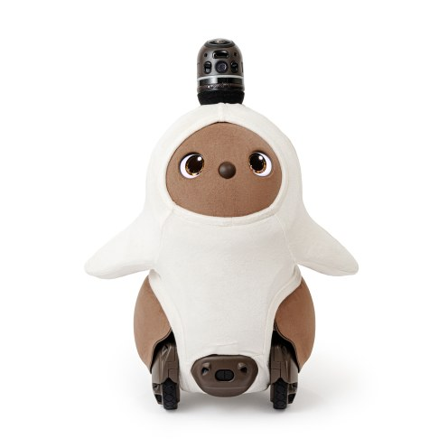
官方宣传图／LOVOT 3.0，服装示意，非本机实测；技术页 U104。身份／使用者与购买者／场景：轮式、可抱持的家庭陪伴机器人，主张温暖身体与眼神交流，而非语言助手。成人自购、家庭成员共同使用及赠予亲人是可能的购买关系；设施导入不应自动等同普通家庭消费，标准消费方案也不等于法人方案。
玩法循环：它在房间活动、察觉人声与触摸→看向或靠近人→被抱起、抚摸后以眼睛、鳴声和身体回应→放回地面继续探索并回充。互动的核心是“被注意、被寻求接触”，不是玩家通关；衣服与外观选择增加照料和展示环节。U104
AI 实际作用：官方说明深度学习参与实时决策、环境理解及个性形成，不能简单写成整段预录动作重播。瞳孔、眨眼等为分层显示，鳴声来自声带模拟合成；此处“生成声音”不等于 LLM 生成语言，未取得通用生成式对话证据。
机电感知与本体／App／云；断网停订：3.0 技术页明确半天球相机、麦克风、温度相机、照度与前向相机，以及触摸、测距／深度感知；轮式本体执行移动与回充。未从这些说明推导芯片具体型号、算力或自由度。App／服务承担使用管理，逐功能本地／云处理表和短时断网退化未取得。标准月服务永久解约后停止活动，并删除记忆和备份；保留记忆的休止计划是另一种机制。P129
价格／地区／日期／状态：2026-10-10 日本标准色「ちゃ」一次付清含税 577,500 JPY，已含事务费14,300及3.0运费3,300。软件／护理月费9,900、12,980或19,800；全保首六月12,980、第七月19,800的活动至10/25。72期硬件贷款不是含服务总月费，官网可选购不证明已交付。P103
2026 变化：7月日本有效合同对应设备2万体以上是存量，不是今年销量、独立家庭或活跃度，也不能与1月“运行中”口径直接相减。S04
差异／弱点／商业启发（推断）：触觉、体温和主动接近建立区别于聊天盒子的价值；高总持有成本及解约后失去活动和记忆构成退出负担。商业设计应同时解释持续服务价值和退出方案，而不是用“情感连接”掩盖合同依赖。
关键验证问题：目标家庭在知悉完整月费和解约后果后，是否仍愿意购买并持续付费？
AD03｜CASIO Moflin PE-M10GD／SR
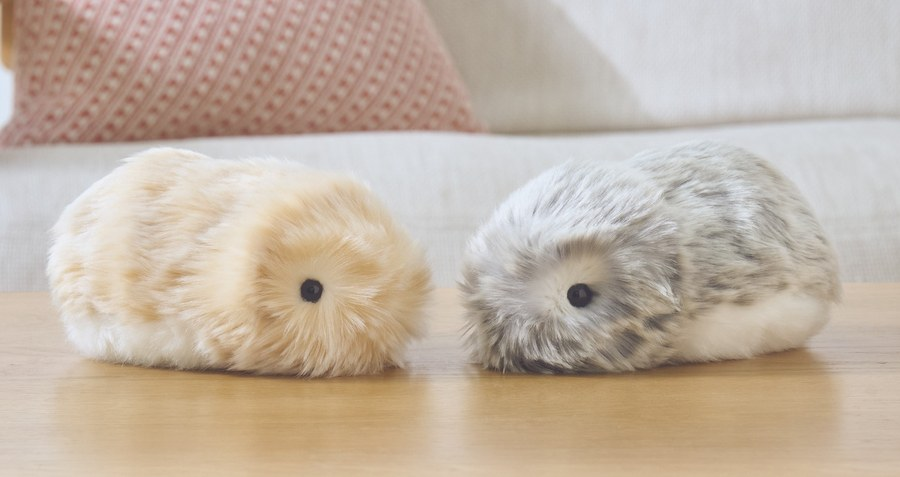
官方宣传图／PE-M10GD、PE-M10SR，非本机实测；2024 发布页 U105。身份／使用者与购买者／场景：手掌尺度、非语言的毛绒陪伴宠物，不是会聊天的音箱。以抱持、抚摸和观察成长为主；成人自购、亲友礼赠与家庭共同照顾是场景推断，不能把厂商“疗愈”定位视为医疗效果或某年龄群已验证需求。
玩法循环：经常说话、抱起、轻抚→听到叫声、看到细小动作→猜测其情绪并改变接触方式→随着日常照料出现更熟悉的反应。MofLife App 把当下情绪、变化曲线和互动记录可视化，使用户可回看而非只等即时惊喜。官方“400万种以上个性”是组合主张，不是证明每只人格都可被人区分。U105
AI 实际作用：厂商称独自情感 AI、认出常说话的人，并学习主人偏好的动作；在功能分类上属于识别与情绪／偏好状态更新，不是自然语言生成。动作和叫声表达状态，算法架构、芯片、训练资料与个性稳定性未知，不能将“会成长”写成使用大模型。
机电感知与本体／App／云；断网停订：毛绒本体内的动作机构及声音输出承载交互，具体电机数量、传感器模组和自由度未取得。官方发布规格约260g，续航约5小时仅为25℃条件标称。MofLife 是情绪查看层；本体成长是否依赖持续联网、离线同步和数据恢复边界未核。Club Moflin 是维修／毛皮护理优惠会员，不是启动动作或生成对话的必需订阅。P117P118
价格／地区／日期／状态：日本含税59,400 JPY是2024-10-10公告中的 PE-M10 发布 MSRP，计划11/7开售，不冒充2026成交价；运费与当前现货成交待核。Club 年费含税6,600 JPY，一年合同最多3只，具体护理仍可能另付费。P119
2026 变化：既有核验表明当前列表并列 PE-M10／PE-M11，后者改变充电屋为USB-C，不能套用原代价格或把页面403当停售；未取得2026原代新功能发布的可靠日期。
差异／弱点／商业启发（推断）：无语言降低“答错话”的期待压力，柔软触觉与状态记录支撑养育感；弱点是成长容易停留在用户主观解释，毛皮、电池和动作机构均需维护。可借鉴把情绪状态变得可感知，但不应以组合数字代替可体验差异。
关键验证问题：不看App的用户，能否在持续照料后稳定区分自身宠物的学习变化与随机动作？
平台补核（2026-10-10）：A103锁定PE-M10SR银色二手B级、2nd STREET挂牌，未得商品销量／评论；不是新品销售或弃用率证据，不替本卡新品价。
AD04｜Yukai Qoobo 大号
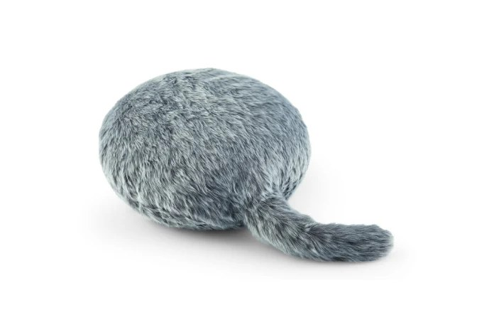
官方宣传图／Qoobo YE-QB001G 大号，非 Petit，非本机实测；官方商品页 U106。身份／使用者与购买者／场景：带尾巴的机电毛绒靠垫，刻意省去脸和语言。官网面向寻求日常安慰、想养宠物而不便养的人；自购与赠礼均可能。适合膝上抱持、沙发休息等低注意力情境。没有设置一般年龄数字，但婴幼儿不可用，儿童或需照护者应有人陪同，不能称全龄无条件安全。
玩法循环：轻抚→尾巴轻摇；多次抚摸→更明显摆动；偶尔自行摆尾→诱发再次抚摸。官网明确由使用者自由解释尾巴反应，形成“拟似心意交流”。这里没有关卡、喂养失败或持续会话任务；与电子宠物的数值养成不是同一个循环。U106
AI 实际作用：技术段说明研究真实尾巴运动并编写再现程序。可归为传感触发、动作程序与变化反馈，未获得机器学习或生成式模型证据；“疗愈机器人”并不自动意味着AI，更不意味着已证实治疗收益。
机电感知与本体／App／云；断网停订：毛绒外覆、内部摆尾机构、接触响应构成主要闭环；未取得具体传感器料号、电机数量及自由度。官网标称约1kg、52×32×15cm、镍氢充电电池，约8小时使用取决于动作频度。已读玩法未要求App或云；未取得完整订阅条款，故不扩大为永不收费保证。官网允许严重污渍时单独取下外套、用稀释中性洗剂轻柔按洗，并警告毛感可能改变；不能坐在本体上，清洁保养是真实使用成本。
价格／地区／日期／状态：2026-10-10 日本官方店大号含税17,600 JPY，运费结账计算；颜色库存需逐变体确认，不能用页面模板“在庫切れ”判定全线售罄。不是 Petit、Disney 联名或单独充电器价格。P104
2026 变化：本轮取得当前商品及功能说明，未取得大号2026新代或新增AI能力的明确发布证据；当前在页面出现不等同当年新品。
差异／弱点／商业启发（推断）：单一尾巴自由解释空间大，安静且不会争夺语言注意力；变化不足可能较快暴露机械重复，机电毛绒还多于普通抱枕的维护需求。启发是通过动作时机与触感做少而清楚的反馈，而不是默认加入麦克风和云对话；成本或留存优势尚无实测。
关键验证问题：与同材质无电机靠垫相比，摆尾反馈能否持续增加用户主动接触，而非仅首次新鲜感？
AD05｜Yukai Mirumi
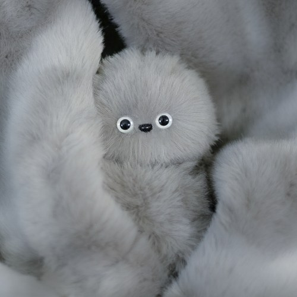
官方宣传图／Mirumi Gray，非本机实测；日本官方店 U107。身份／使用者与购买者／场景：以“ちら見”侧目为特征的毛绒机器人挂件，固定在随身物上而非自行走路。佩戴者、自购者、礼物接收者和偶然注意到它的旁人形成不同角色；通勤、散步和朋友见面是合理场景推断，不是销量或实际使用场所调查。
玩法循环：佩戴者带它出门→声响、拍头或自发动作引起转头→旁人感觉被注视、产生笑容或互动→佩戴者展示或再次触碰。官网把“像碰巧与婴儿对视”的意外情感联系作为设计目的；这不是完成指令的生产力工具，也不能据眼神外观推断真正识别人脸。U108
AI 实际作用：已核实页面只明确声音／触摸响应、转头及自行运动。可确认机电交互；规则脚本、学习算法的具体分工未知，未取得LLM、会话生成或长期记忆证据。拟人化的害羞、好奇是动作表达与用户解释，不宜当成机器内在情感测量。
机电感知与本体／App／云；断网停订：身体用于依附，头部运动和可见眼睛承担表达。声音与触摸输入已由官网说明，具体拾音／触摸模组、电机、自由度未知；不能把眼睛外观当摄像头。已读主页面没有要求手机常驻或云会话，完整联网、断网和收费条款仍未核准；不借“可随身”推导全天续航、蜂窝连接或防水。
价格／地区／日期／状态：2026-10-10 日本官方店22,000 JPY含税；调价明确于10/1当地10:00生效，运费与交付期待核。店内有Gray、Ivory、Pink、Black等项目，但颜色不重复计成代际，网页可选也不代表每色现货。P105P114
2026 变化：可确认的是上述调价；公告URL中的20260914不是已核实可见发布日期。本轮未取得可用成本、销量或留存数据，涨价不能自动解释为热销、缺货或商业失败。
差异／弱点／商业启发（推断）：把旁观者纳入互动，使产品从私人桌面宠物变成社交小道具；与普通挂件相比，动作时机是核心增量。风险是公共场所噪声误触、充电麻烦和新鲜感消退，均需实测。可借鉴低信息量但易被理解的“看向你”，不必先做开放问答。
关键验证问题：真实通勤噪声下，转头是否仍被旁人理解为回应，而不是无关的反复机械运动？
AD06｜Energize Lab Eilik 基础款
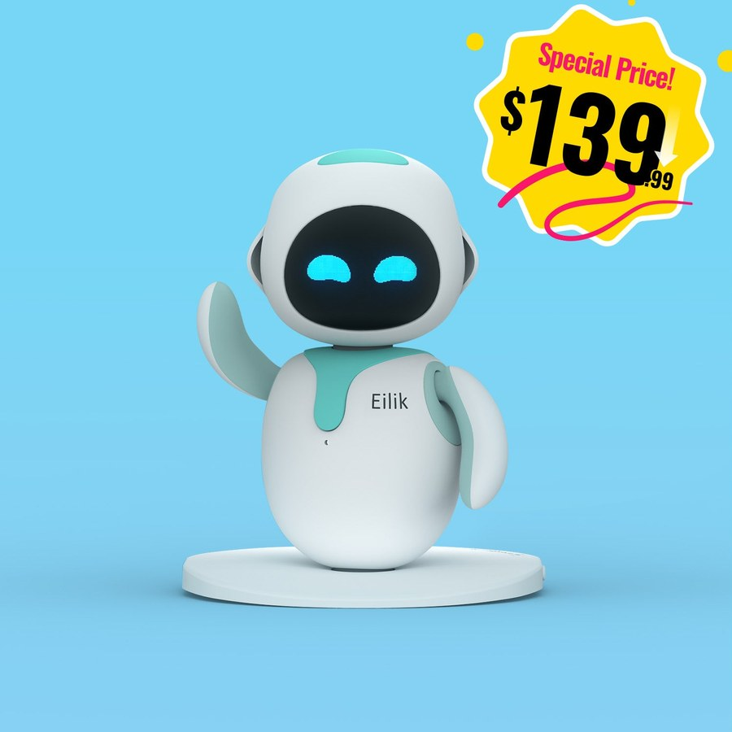
官方宣传图／Eilik Blue，非本机实测；图内促销价保留，以正文地区与日期为准。官方商品页 U109。身份／使用者与购买者／场景：桌面表情机器人，适合办公桌、床边的短时互动；厂商同时描述儿童、朋友、情侣及礼赠场景，不代表这些人群销量相同。基础款是单机蓝／粉色，不是DQ版本、双机套装，也不包含另购AI Station或Panxer。
玩法循环：摸它、拿起它或短暂陪玩→屏幕表情、声音和身体动作回应→用户尝试不同触碰观察变化。两台连接可跳舞、打闹和互动，增加朋友间展示价值；但单机买家不能默认获得双机玩法。官方更新带来新动画与游戏，属于内容补充而非证明自主形成无限新行为。
AI 实际作用：基础机可见价值主要是动画、动作与触摸触发反馈；具体脚本和状态决策架构未公开核准，不以“emotional intelligence”认定LLM。商品页明确自然AI会话由另售AI Station扩展，不能将该能力或用户评论里泛称的AI并入基础单机。U109
机电感知与本体／App／云；断网停订：官网规格列OLED表情屏、扬声器、USB-C及四个EM3舵机，这仅是厂商规格，不据数量推导完整自由度，主控芯片未知。基础交互在本体工作，FAQ明确无需Wi-Fi或Internet；更新途径和附加服务应与日常离线互动分开。1分钟无互动待机、15分钟睡眠、30分钟自动关机是官网描述，非实测。基础强制周期费未取得，未来云扩展不等于永久免费。
价格／地区／日期／状态：2026-10-10国际官方店单机139.99 USD；本轮FAQ进一步明确不含目的地关税、税项及其他当地费用，运费仍需结账核验。双机269.98 USD不能分摊成单机官方价，页面销售入口不是交付证明。P107
2026 变化：本轮页明确将AI Station、Panxer列为另售扩展，但未核实各项功能首次上线的2026日期；不凭图片文件时间戳断言发布日期。
差异／弱点／商业启发（推断）：不配网即可获得核心表情反馈，降低送礼后设置负担；重复动画及多人玩法额外购机可能限制单机深度。值得借鉴的是先做离线即用的完整小体验，再清楚销售扩展，而不是让附加底座弥补基础机宣传缺口。
关键验证问题：在不购买外设或第二台的条件下，基础单机能否提供一周后仍有吸引力的互动组合？
平台补核（2026-10-10）：W109为第三方Eilik新机listing，6次当日浏览／11名关注不是销量，完整颜色／附件及授权未核；不把卖家“AI”标题升级为基础机生成式能力，不替本卡官方报价。
AD07｜LivingAI EMO 基础套装
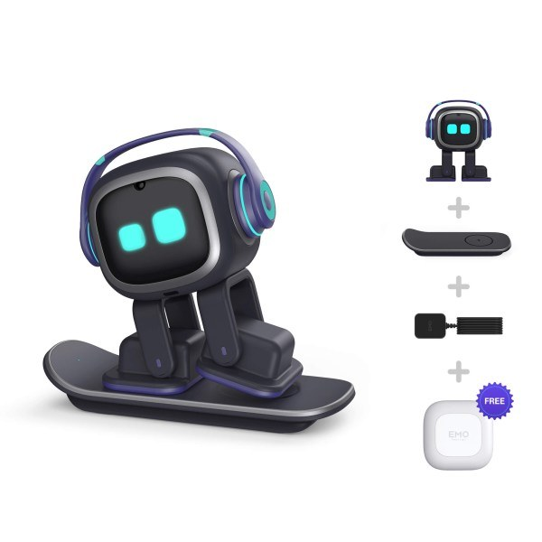
官方宣传图／EMO LA20401011 基础套装，非 GO HOME，非本机实测；商品页 U110。身份／使用者与购买者／场景：会在桌面自主活动、以屏幕眼睛和身体表达的宠物机器人。适合个人桌面陪伴、机器人爱好者收藏及赠礼；成人自购与家庭共玩是场景推断，不将品牌粉丝评论当成已验证用户分布。
玩法循环：桌面自主探索或被声响吸引→认人、转向、显示表情→主人发出指令或陪它跳舞玩游戏→再回到自主活动。闹钟、天气动画等把实用信息包装成宠物回应；官方“天气变了会感冒”是养宠叙事，不是生理状态。也不能把“never falling off”宣传当成桌边安全保证。
AI 实际作用：声音定位、识人及自主桌面导航属于传统感知和机器人行为；舞蹈、天气画面与情绪表现可能使用预制内容，确切脚本／学习分工未知。官网称内置神经网络处理器与AI模型，但没有据此核准具体芯片，更没有证实基础款所有交互都是LLM生成。U110
机电感知与本体／App／云；断网停订：本体腿部运动、表情显示与声学／视觉交互共同构成存在感；未核定传感器型号与自由度。基础包装包含标准耳机、Skateboard充电板与线及赠Smart Light，不能从图中站在充电板上推导自主回充。App、云端识别和各语音功能的处理边界、断网保留集、会员限制仍未取得；GO HOME的自动回充配套不能默认移植到本卡。
价格／地区／日期／状态：2026-10-10国际店279 USD，SKU LA20401011；税、运费与目的地交付条件待核。网页称下单约两周发出，尚无独立履约验证；GO HOME为另一个369 USD套装边界，不混价。P128
2026 变化：本轮只确认当前商品与包装，没有取得适用于这款基础套装的2026具体固件变更记录。图库文件名带日期不能证明当日发布或全部旧机都已更新。
差异／弱点／商业启发（推断）：比固定底座表情玩具多了自主接近与空间探索，桌面尺度又小于家庭轮式宠物；但桌边、杂物、充电与网络故障会直接打断人格体验。启发是将“主动出现”的时机与失败恢复视作产品核心，而不只比较对话模型。
关键验证问题：基础款在真实杂乱桌面上，探索、边缘处理与人工充电的负担是否抵消自主陪伴价值？
AD08｜LivingAI AIBI Pocket
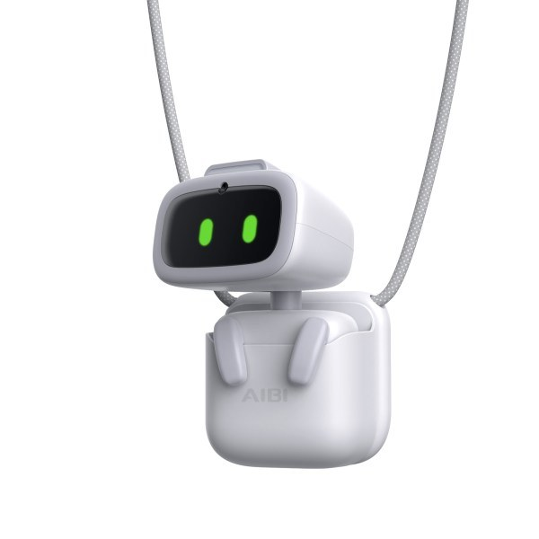
官方宣传图／AIBI Pocket LA23101011，挂载配件示意，非本机实测；商品页 U111。身份／使用者与购买者／场景：随身与桌面之间切换的小型屏幕宠物，不是缩小后仍能自由行走的EMO。图示挂绳、携带外壳及桌面底座提示携带关系；自购、朋友礼赠与随身展示是适用场景推断，图片出现的配件不能无条件当作全部标配。
玩法循环：带在身边或放上桌→以声音触发互动、让它认脸或拍照→屏幕给出反馈→查看照片或天气动画，再进入下一次短互动。商品正文大量功能写在图片里，本轮实际打开“Face recognize & photography”和“Vivid weather report”图确认了这些厂家主张；没有观看演示视频，不把连续性能当已核实。U111
AI 实际作用：认脸属于识别，天气查询属于信息服务，动画呈现不自动等于生成式输出。当前主商品页与已读图未给出可审计的LLM实现、模型版本、记忆规则或效果数据；故会话生成与长期学习记为未知，而非因品牌LivingAI断定使用大模型，也不反向断言一定没有。
机电感知与本体／App／云；断网停订：屏幕面部、摄像相关功能和小型本体承载表达；主控、摄像模组、运动机构数量与自由度未取得，不从外观推测。Pocket Charger为单独商品，便携不证明“全天”实际续航。App配网、手机热点要求、云处理、离线拍照查看及停订后的功能分界均待核，不能照抄EMO或同类设备的架构。
价格／地区／日期／状态：2026-10-10国际官方店249 USD，SKU LA23101011，税运待核；本轮正文可读“约两周发出”并附赠配件的承诺，这比旧P127只核购买入口更具体，但仍不是已寄出或签收。“Pre-order Gift”作为相关项目不能把整机一概判为预售。P127
2026 变化：未取得可靠的2026新代、固件上线或真实新增交付证据；当前动态商品页只代表访问日所见，不还原某历史批次的配件和功能。
差异／弱点／商业启发（推断）：随身形态增加接触机会，认脸和拍照能把“你看我”变成共同记录；但便携同时放大续航、公共场所拍摄隐私与网络切换问题。启发是先验证离桌后的核心互动是否完整，不用“all-day”措辞替代续航和连接条件。
关键验证问题：不用家中Wi-Fi的完整外出日，哪些互动可独立完成、哪些必须手机联网，实际可用多久？
AD09｜KEYi Loona Petbot Premium
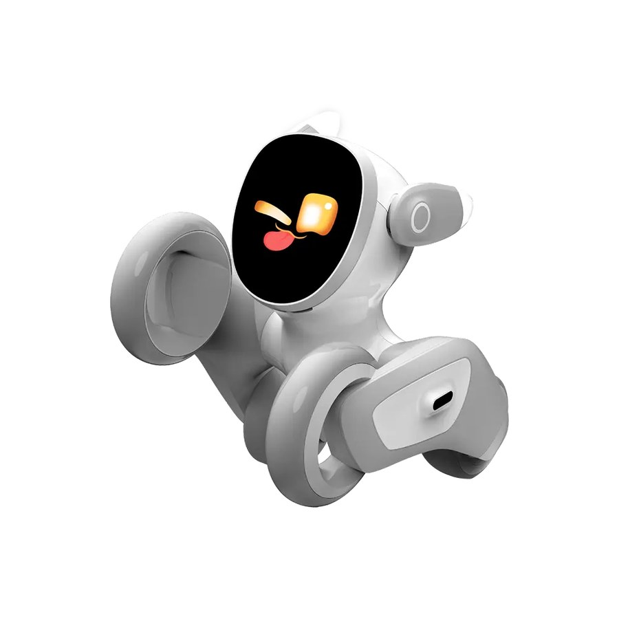
官方宣传图／Loona Petbot Premium 本体，非 Space Edition、非 DeskMate，非本机实测；新加坡商品页 U112。身份／使用者与购买者／场景：在家庭地面活动的轮式机器宠物；官方强调有孩子的家庭，也容纳成人陪伴。儿童可能主要玩耍、家长负责购买、配网与权限管理，不能据家庭宣传推算年龄份额；它不是手机底座DeskMate。
玩法循环：呼唤、手势或拿道具→识别、跟随、摆耳和表情反馈→追随／斗牛等游戏→App的AR喂养、Blockly编程等拓展→回充后继续。此循环同时包含实体活动与屏幕内容；后者的存在不证明孩子会减少屏幕时间。
AI 实际作用：导航、认脸、声音定位及动作控制是感知／传统机器人层；GPT聊天、看物讲故事和数字绘图才是官网明确宣传的生成式层。长记忆、识别准确率与“5万亿次运算”不作为实测，且算力指标不是芯片型号。厂商说尽可能本地处理，也不能推出所有图像或语音不出设备。U112
机电感知与本体／App／云；断网停订：本体有720P RGB相机、3D ToF、触摸、惯性感知、麦克风阵列及轮／耳动作；具体模组型号未知。App承载游戏、编程与远程相机入口，GPT服务的后台模型版本和本地／云边界未审计。本轮收费FAQ成功展开：ChatGPT 4o功能“for the moment”免费；修补P116的未展开缺口，但额度、未来收费与停服后退化仍未知，不写永久免费。断网游戏与导航保留集待测。
价格／地区／日期／状态：2026-10-10新加坡页面691 SGD，套件含Premium本体、Charging Dock及Game Prop Kit；税运待核。Premium是套件名，不是订阅等级；官网购买及发货时效承诺不等于履约。P116
2026 变化：页面宣传Space Edition从10/17发出，截止日尚未到，不能当已交付；DeskMate另有2026线索，应留在其独立条目，不转成Petbot更新。E08E09
差异／弱点／商业启发（推断）：实体追逐、可动耳朵与表情能让会话之外仍有玩法；传感和多种内容入口增加配网、地形与售后复杂度，远程摄像也需要清楚权限设计。可借鉴把生成式能力当拓展层，而不是让断云直接破坏核心宠物循环。
关键验证问题：关闭外网后，游戏、认人、回充与App控制分别还能运行到什么程度？
平台补核（2026-10-10）：W102为Loona含底座页，3.9／1,012全球评分及子类BSR不代表美国销量，默认Singapore配送限制不是美国缺货；与本卡Premium权益一致性未核。其A+“No Monthly Fee／ChatGPT-5o”不覆盖官网临时免费，也不认证后台模型。
AD10｜Vector 2.0 黑色新机
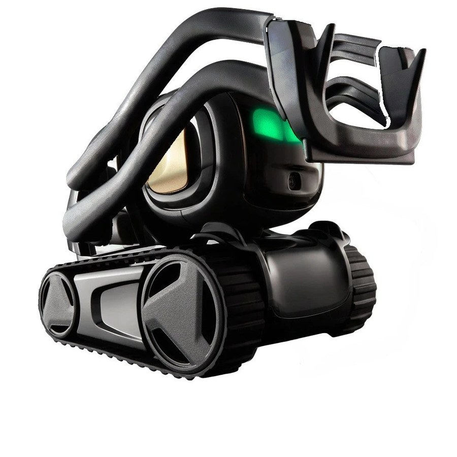
官方宣传图／当前Vector 2.0商品图库黑色本体，非本机实测；商品页 U113。身份／使用者与购买者／场景：小型履带桌面机器人，以自主活动、屏幕眼神与语音小助手为混合定位。爱好者自购、桌面陪伴和赠礼为场景推断；用户承担联网与订阅设置，不能因为沿用Anki品牌就假定原公司、当前运营者和全部服务政策相同。
玩法循环：本体在桌面活动引起注意→人用“Hey Vector”唤醒或让其做小任务→表情、动作、天气或定时器反馈→回到环境探索。举臂和履带移动强化角色性，照片等小任务提供重访理由；实际响应率、桌面适应性和连续运行尚未测试。
AI 实际作用：认脸、环境感知与动作控制属于传统机器人功能；定时器、天气是工具服务，不自动属于生成式AI。当前商品标题含ChatGPT连接主张，但已读页没有交代模型、上下文长度或记忆机制，不能声称每个动作均由LLM实时决策。新相机提升认宠物或微笑识别的部分文案仍带“planned software development”，不能全部写成已交付。U113
机电感知与本体／App／云；断网停订：履带、抬升机构、显示面部及摄像提供实体交互；官方称2.0有2MP相机和可自行更换电池的舱体，主控与模组具体型号、自由度未核。App／初设完整分工未取得。语音指令依赖付费Vector云服务，未订阅可运行但不接云；这不等于彻底变砖，也不证明所有自主行为离线无损。OSKR另售开箱机方案不自动附于本卡新机。
价格／地区／日期／状态：2026-10-10当前国际官方店黑色新机249.99 USD，税运待核；语音服务11.99 USD/月或99.99/年，页面称随机器有前28日免费。不是初代历史价或Open Box价。站点称有货、一个工作日内发出，未独立核实。P112P115
2026 变化：本轮确认当前入口、标价和服务承诺，未取得2026逐版本功能发布记录。不能用现站存在抹去历史经营受挫，也不能把历史停服自动写成当前永久不可用。
差异／弱点／商业启发（推断）：可更换电池有利维护，实体动作让小助手更具角色感；云语音订阅和运营连续性是长期价值的关键风险。启发是明确披露无订阅可用集与服务退出安排，而不是只保证硬件仍会动；不由此估计续订率或利润。
关键验证问题：取消订阅后的真实基础体验，是否足以让购买者继续把它当宠物而非失去功能的助手？
G2｜机电收藏、AI毛绒及2026提名（AD11—AD15、X01—X05）
AD11｜Robosen G1 Elite 擎天柱：先卖可重复观看的机械表演，再卖创作空间
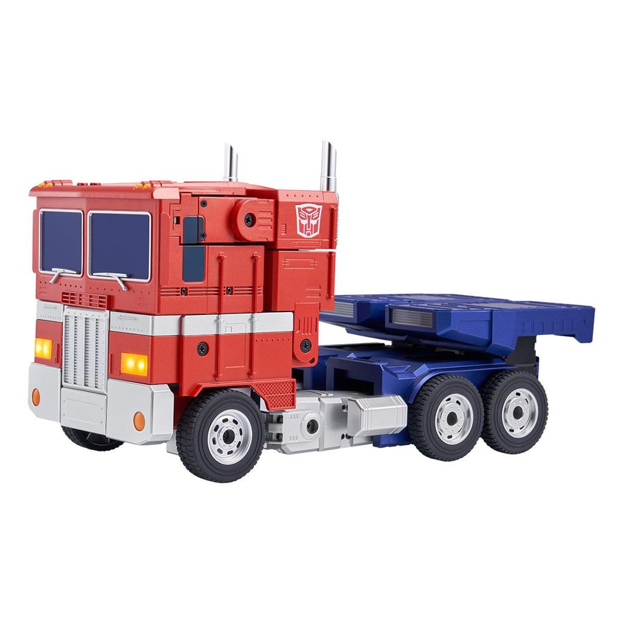
图：Robosen 美国官方商品页的 G1 Elite 卡车形态，非 Flagship、电影版或拖车。版权及 TRANSFORMERS 商标归原权利人，仅作评论性引用。U201
身份与场景。 乐森的授权 IP 自动变形机电收藏玩具，国内对应 G1 精英版，美国为 Elite Optimus Prime。成人收藏者、送礼者和愿意编动作的家庭是合理买者场景（分析判断），不能把“机器人”自动归入儿童教育或大模型陪伴；两地 SKU、售后仍需分别核。P111P120
玩法循环与 AI。 说预设口令或用 App 遥控，观看人形／卡车切换与动作，再组合自编表演并反复演示。官网列 39 条语音命令、125 条原声台词及编程入口；固定台词是内容库，变形是预设运动控制，语音命令属识别触发，均不是生成式会话证据。页面“三种／四种编程模式”口径不同，本卡不凑模式数。U201
硬件与服务边界。 美国页列 27 个伺服电机、Bluetooth、约 1.9kg；本体完成动作，手机承担控制和编排。未见可据以确认云端生成或强制订阅的条款，也未测断网后 App 登录、动作下载及已存程序各能否继续，不能把 Bluetooth 等同所有功能永久离线。多关节机构的跌落、夹手和维修成本是使用风险判断，不是已发现本款故障。
价格与今年变化。 国内页面 4,999 CNY，5,999 为参考价，花呗 12 期是支付分期；国内即买状态待确认。美国 999 USD，未税且运费另算，厂商称有货不等于本项目收货。本轮未取得本款 2026 年生成式升级或版本发布证据，不能把同站新拖车套装记成本体的新 AI。P121
差异与启发（推断）。 它的价值不依赖“说得像人”，而在 IP 还原、变形可靠性和能自己制作的表演；开放编排可能延长新鲜感，但需用复玩率而非首看惊艳证明。验证问题： 首次激活后断互联网，口令、遥控、已保存动作和新增动作分别还能做什么？
AD12｜Ropet KAMOMO Pro：以照料仪式而不是长对话建立关系
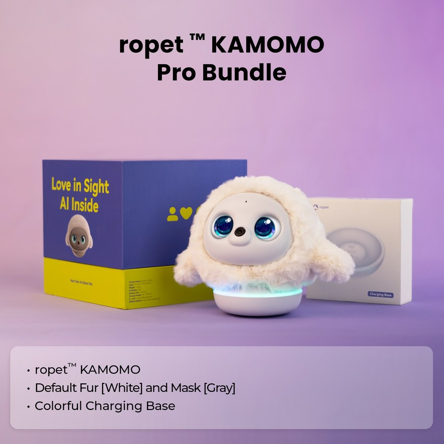
图：Ropet 官方当前 KAMOMO Pro Bundle 商品图，本体与彩光充电座可见，不是只用包装充图；非 Basic 或早期众筹配置。版权归 Ropet，非开放许可。U202
身份与场景。 这是可触摸、可更换外观的毛绒电子宠物，当前资料来自国际美元店，不据此认定中国大陆零售或全球交付。对不便养真宠物、希望桌面或睡前有低语言陪伴的人具吸引力，是场景推断而非治疗适应证；也不拿商品评论替代独立效果研究。P126
玩法循环与 AI。 官网把喂食、抱持、安抚和哄睡作为照料仪式，称相处会改变性格；用户照料→表情／动作回应→形成熟悉感→再次照料。认脸、手势和触摸回应属于感知识别及行为适应宣传，底层算法与动作是否生成均未知，不等于 LLM。Dream Sketch 是另列的联网扩展，不能把日常本地 AI 统一描述成云端聊天，也不能由名字断言已提供何种图像模型。U202
硬件与分工。 官网确认内置摄像头、麦克风，App 可改眼睛、配饰及部分设置；Pro 配充电座。厂家称日常图像、声音在本机处理，日常交互可离线；Dream Sketch 要在 App 手动启用，故“日常离线”不等于所有功能不上云。隐私、记忆留存和固件实现未做抓包验证。FAQ 标典型续航 2.5–3.5 小时，使用强度会影响，不是全天续航实测。
价格与今年变化。 当前 Pro 为 349 USD，对比价 469；299 USD 且 Sold out 的无座 Basic 不能混价。税运、订阅金额、自动续费、停订损失与地区服务支持待确认。2026 本轮能确认的是当前 KAMOMO 命名／套件与 FAQ，不足以给 Dream Sketch、性格学习或硬件升级补造发布日期。P126
差异与启发（推断）。 把陪伴做成“需要我照顾”，可减少用户不断想话题的负担；可换毛、面罩和眼睛也给内容之外的复购路径。但“越养越懂你”必须排除随机动画造成的错觉。验证问题： 同一固件下持续离线一周，能否观察到可重复的个体识别与照料状态变化，并与联网扩展清楚区分？
AD13｜FoloToy Kumma／乐乐：同一只 AI 小熊，关键是模块与持续服务
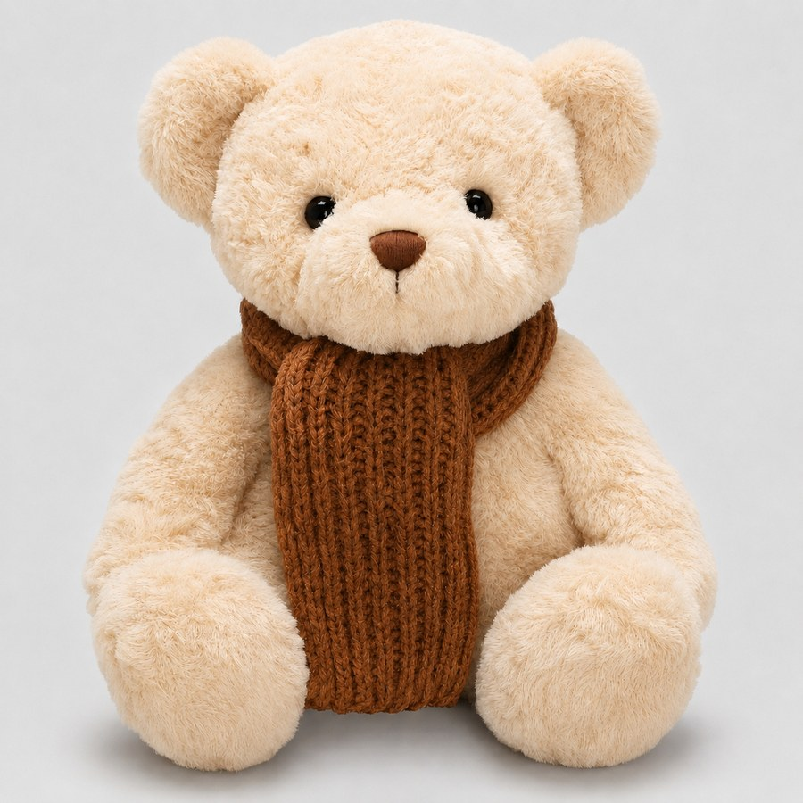
图：FoloToy 官方商店 Kumma 米色小熊，非 Panda/Momo。Kumma 与中文“乐乐”按同款合并，不重复计数；版权归 FoloToy，非开放许可。U203
身份与场景。 毛绒小熊加可拆 AI 魔匣的消费套件，官网明确面向孩子和成人。实际买者可为家长或送礼者，使用者负责抱玩、问答与讲述日常；这与爱好者自托管方案不同，不能把后者的软件自由度和成本套给普通消费者。P108
玩法循环与 AI。 用户把问题或经历说给小熊，得到口语回应，再追问、讲故事或建立角色关系。问答属于 AI 会话定位；本轮未取得当前具体模型与调用记录，不能把“会回答”全部认定为实时生成，也不能杜撰动作学习。毛绒外观是情感入口，不是传感证据；没有证据证明这只熊能行走、识别人脸或因拥抱自动学习。英文介绍残留 Panda/Momo 文案，不能把串品规格当作 Kumma 升级。P108
硬件与分工。 当前精确商品页列 F-202、800mAh、35cm 玩具、55×50×40mm 模块和 2.4G Wi-Fi，支持手机热点；模块须在清洗前取出，手洗／局部清洁而非整机机洗。可确认是联网语音硬件，但手机配置、云模型、离线回复及停服后功能清单未闭合；可拆不等于可离线或可自由换云。U203
价格、服务与今年变化。 官方店选 China 仍为 99 USD，不是人民币报价，也未证实国内履约。旧介绍含一个月试用，之后 4.9 USD/月；自动续费、取消与无会员模式仍待确认。宣传“包邮”和结账算运费同时存在，不合并成免费到手。2026 可观察到当前商店及规格，但未取得有日期的本款新功能发布；2025-11-20 生效条款不记成今年上线。P109P130
差异与启发（推断）。 把电子核心与毛绒分开，有利于清洁和角色外观扩展；真正的长期成本却转到对话服务与儿童内容治理。低硬件标价不能遮蔽续费及账户退出成本。验证问题： 一个月试用到期并拒绝续订后，分别还能聊天、听固定内容、配网或访问既有记录吗？
AD14｜Haivivi BubblePal 巴波泡：让已有玩偶成为新角色
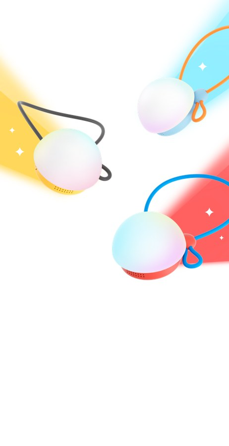
图：Haivivi 中国站 BubblePal 挂件宣传图，展示挂绳和硬件形态，不代表六种销售 SKU 全部配置。版权归 Haivivi，非开放许可。U204
身份与场景。 BubblePal 不是必须重新购买一只机器宠物，而是给已有玩偶增加语音能力的挂件；明确属于儿童／亲子交叉组，不能计入纯成人产品。家长购买并管理，孩子保留自己熟悉的毛绒对象，是与集成 IP 套装不同的切入点。P110
玩法循环与 AI。 为玩偶选角色或自定义人设→与之问答、共同编故事→记住偏好／继续上次话题。官网标题明确 AIGC，故事共创是生成式内容主张；角色背景和声音选择也可能来自固定内容库，不能一概称生成。长期记忆、成长报告及“所有为什么”只是厂家表达，不是事实准确率、心理干预或教育效果的实测；角色保持一致需要另外验收。U204
硬件与分工。 挂绳式本体承担语音交互，原有玩偶不会因此获得关节动作；本轮没有摄像识别或移动能力证据。官方要求 2.4G Wi-Fi，App 承担角色和监护相关功能，生成服务的模型、数据路径与记忆删除机制尚未核验。没有证据列明断网可用内容，不能把“玩偶仍能抱”当电子功能离线承诺。官网尺寸为 53×57×40mm，非毛绒尺寸；包装重量与产品重量文案混列，不据此推算本体重量。
价格与今年变化。 中国官方店单件 299–329 CNY、六种变体；289 起/件有买三件门槛，另有领券条件，不是无条件单件价。AI 额度、订阅、停订影响待核，店铺积分会员不是云订阅。9 月媒体到店采访支持 Haivivi 在深圳商场验证体验渠道，不能把累计 35 万台写成今年销量，也不证明本款固件更新。P123S06
差异与启发（推断）。 利用孩子已经建立的玩偶关系，可能比解释陌生机器人更容易获客；代价是外观角色与云端人设不一致、多人共用记忆和监护权限的复杂性。验证问题： 两个孩子轮流使用、切换两个玩偶角色后，历史记忆是否串人串角色，家长能否真正删除？
AD15｜Haivivi CocoMate 奥特曼：以成套 IP 角色和蜂窝连接扩展场景
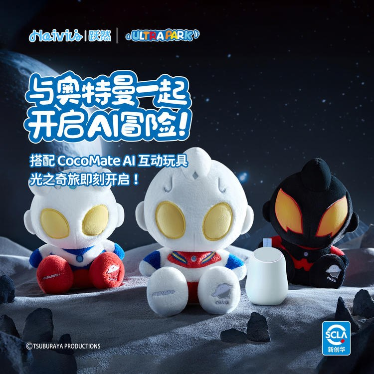
图：官方有赞商品页的奥特曼毛绒与 CocoMate 模块；三款外观同框不等于 599 元买三只。保留原图品牌、SCLA 与 ©TSUBURAYA PRODUCTIONS 标识，非开放许可。U205
身份与场景。 这是中国大陆官方售卖的奥特曼 AI 毛绒套件，明确儿童／亲子定位。与 BubblePal 复用旧玩偶不同，购买的是已选定 IP 的陪伴角色及电子模块；“集成式体验”指成套交互，不代表电子模块与毛绒不可拆。家长购买、孩子在家或外出与喜欢的角色聊天，是产品场景而非已验证用户分布。P124
玩法循环与 AI。 用语音或轻摇唤醒→发问、交流→无话题时由主题卡启发→再延续角色互动。主题卡是内容入口，不必然由 AI 生成；唤醒与摇动检测属传统感知触发，会话则按厂商端到端 AI 宣传列示，具体模型、固定台词占比和响应质量未知。不背书“全球首款”，也不由语音角色联想出走动或表情电机。U205
硬件与分工。 官网列电子本体 75×75×99.5mm、165g、3000mAh，并非整只奥特曼毛绒的尺寸重量。麦克风式语音交互、摇动唤醒、Haivivi App 与联网服务构成体验；Wi-Fi 加内置 4G SIM 可减少对家庭路由器的依赖，但 4G 仅中国大陆，不含港澳台，仍取决于运营商覆盖。断网回复、流量用完和停订后的功能均未取得完整条款，不能把蜂窝连接写成离线。P125
价格与今年变化。 单件页面 599 CNY、三种款式；589 是券后，584/件须买两件且另有领券条件，税运与叠加未结账核。云会员和 4G 流量是否分开计费、续费金额未知。当前在售和宣传图时间不能证明 2026 首发；9 月 Haivivi 商场体验验证仅属品牌渠道变化，不可直接分摊成本款销量。P124S06
差异与启发（推断）。 熟悉 IP 可能降低开聊门槛，4G 能把场景带到车内／户外；但新增流量成本、地域约束、儿童语音隐私与角色内容审校负担。验证问题： 买断、云服务和 4G 各自到期时，家中 Wi-Fi 与外出蜂窝两种场景分别保留哪些功能？
X01｜Sweekar：把成长做成看得见的身体变化，交付仍是未来计划
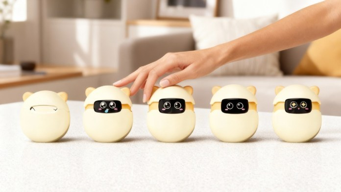
图：TechAcute 刊载、Takway.AI 提供的众筹期发布素材，展示不同阶段的蛋形宠物；不是本项目实拍或量产签收图。图片权属 Takway，原文称供 press usage，非开放许可。U206
身份与场景。 深圳 Takway 的国际众筹口袋宠物，报道标 89g；不能据英语报道认定欧美已交付。它面对愿意随身带养成角色、追求个性化关系的玩家和送礼者（推断），不是能自行跟随行走的四足机器人。7 月报道众筹启动，8 月报道仍在筹资。E03E04
玩法循环与 AI。 从蛋到成年，照料和互动推动语言、个性与身体状态成长，再携带外出、积累记忆并继续互动。机械长高由精密步进电机驱动数毫米，是实体机构，不是生成式模型的证明；阶段养成可能包含状态机。TechAcute 明确转述 ChatGPT、Gemini 接入，允许列作生成式会话宣称，但实际模型调用、人格连续性和安全护栏未测。不能采用“唯一可外出 AI 宠物”的排他广告。E03U206
硬件与云边界。 小屏表情、扬声器、触摸互动及 NFC 碰碰交友由报道描述；手机热点提供互联网，记忆在云端。媒体称可离线，却未拆清断网时哪些成长、声音和对话继续，不能把本地养成等同完整 LLM 离线。语音／情绪数据如何存储、删除与迁移、停订后角色是否保留，均待厂商给出可执行条款。
价格与今年变化。 8 月文载超早鸟 $149，币种符号照录，未核结算币种、税运、当前余量或订阅；不是 10 月可成交零售价。2026 新变化是“口袋形态＋实体成长＋云记忆”的众筹组合。报道所称 2026 年 11 月量产发货晚于截止日，不能写成已经交付；官网连接失败、Kickstarter 403 的旧限制仍保留，不绕过访问。E04
差异与启发（推断）。 把抽象关系进度外显为身体变化，有望提供更强的养成反馈；机械耐久、云账户消失时的角色连续性与儿童隐私也是额外成本。验证问题： 一只实际交付机器在无热点一周后，成长状态与云端记忆如何衔接，是否重置或丢失？
X02｜KOTTI：日本先行销售的云会话毛绒，功能版本必须追问
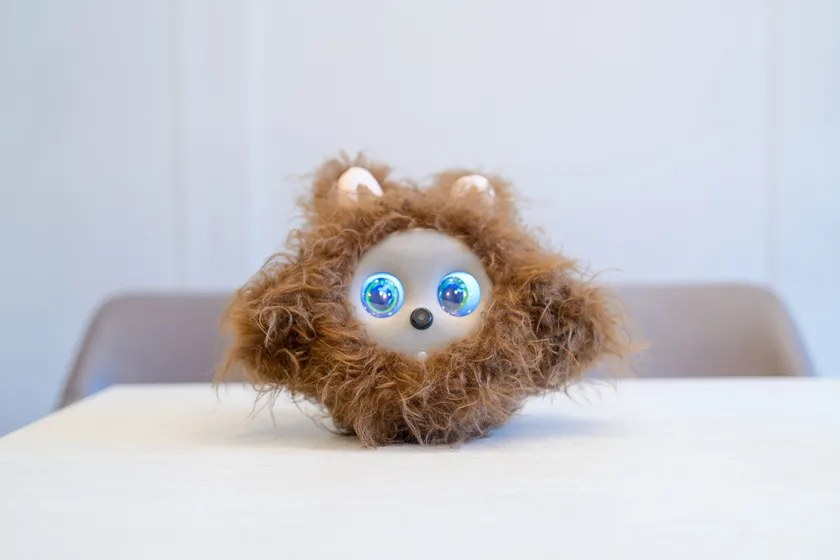
图：未来MD 发布于 @Press 的「KOTTI本体（グレーフェイス）」照片；日本先行销售展示款，不证明固件或签收。版权归原发布方／权利人，非开放许可。U207
身份与地区。 KOTTI 由未来MD 在日本执行 Makuake 项目，页面列 InnoX 与 GOLDTek 等开发、运维和量产分工。“日本正规渠道首次销售”不是日本独立发明或全球首次。厂家把独居者、儿童和高龄会话列为场景，不能据此证明适合医疗、照护或无成人监督使用。E05E06
玩法循环与 AI。 App 选／设角色→日常杂谈、咨询或语言练习→触摸、抱起、放倒时反馈→继续相处。当前发布稿明确 GPT-5.2 与 Gemini 2.5 Flash，自称按内容调用云会话，属生成式能力宣称；触摸与困倦反应则可能是本地状态机，不混成 LLM。语音克隆稿件说“已实现”，当前 FAQ 却列为未来考虑，状态冲突未裁决，不能列为已交付功能。E05E06
硬件与分工。 厂商列触摸、重力等传感反馈，屏幕眼睛与毛绒本体承担表情；具体电机数量未核。初次设置及角色调整需手机 App，生成会话需 2.4GHz Wi-Fi 和云，离线仍有触摸、困倦等反应。宣传记忆偏好不等于已核长期记忆架构；API、过滤和删除线程的实现均未独立测试。
价格、服务与 2026 阶段。 发布稿的历史项目档位为 37,800 日元含税超超早割（本体＋一套服装），另有 39,800／42,800／45,800 日元，不是已结束项目的当前可买最低价。当前宣称无需额外月费，但 FAQ 保留未来高级功能付费可能。5 月先行销售、9 月特定批次到东京办公室属今年阶段变化；到办公室及计划下周发出，均不是支持者签收。5 月稿有 6 月修改记录，不把 10 月所见模型名倒写成 5 月全部已上线。U207E07
差异与启发（推断）。 当地语言与正规代理可减少购买疑虑，“当前无月费”能降低试用门槛，却把云成本风险留给长期运营。验证问题： 能否给出本次寄出固件的功能清单、语音克隆开通状态和无月费服务的适用期限，而非泛用 FAQ？
X03｜Fuzozo 蜂窝版：户外陪伴的关键是连接与服务额度，不是只加一张 SIM
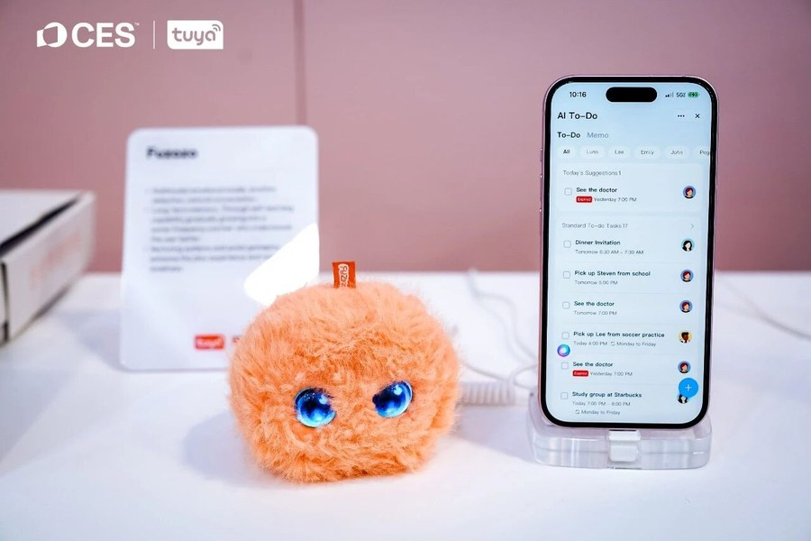
图：Tuya 官方 CES 2026 稿「Cellular Version of Fuzozo」小节实图，保留 CES／Tuya 标识。代表展会蜂窝版，不代表 Fuzozo.net 美国站已交付 SKU；旁边手机画面也不是所有能力验收。版权归原权利人，非开放许可。U208
身份与场景。 Robopoet 与 Tuya 合作的蜂窝版毛绒情感伙伴，2026 年 1 月 CES 展示有官方记录。它是既有 Fuzozo 路线的连接版本信号，不是品牌今年才诞生。随身、通勤或户外陪伴是厂商明确扩展的场景；美国销售站自称 18 岁以上，不可外推全部中国版本的适龄。E01E02
玩法循环与 AI。 用户触摸不同位置／频率→本体变换眼神与回应→交流、积累共享经历→下次继续。Tuya 证实的是这套展示与能力声明，触摸表情可以由传统规则实现；自然会话、日记与记忆是另一销售页的服务主张，模型、生成范围和实际延迟未知。不能把同篇 Hey Tuya 的 OmniMem、AI Lens 或别款的模型名移给 Fuzozo。U208
硬件与分工。 可见毛绒本体与屏幕眼睛，厂家称蜂窝连接支持户外对话；具体感知芯片、机械自由度、本地推理份额未取得。Fuzozo.net 自述英语、4G 与日记，但与制造商的正式归属链尚未闭合，因此这些仅作为“网站声称”，不作为官方规格。没有证据保证断网、流量耗尽或云停服后完整会话仍可运行。
价格、服务与今年变化。 未取得可跨版本采用的官方硬件成交价。美国向页面自述 Basic 每日 20 分钟会话／每月 0.5GB，Plus 一年配置每日 60 分钟／每月 1.5GB；续费、停订后功能及费用待核。10 月所见仍标预售、预计十月下旬发货，具体年份未单列；不是现货条款的“1–3 个工作日”自动覆盖预售。除蜂窝版展示外，广和通官网称搭载LE270-CN的芙崽随行版已面向国内发售，并披露投资及连接／资费合作；无具体发售日，属于供应方声明，非本机实测，不由此认证美国域名或确认中美SKU相同，更不能证明美国签收。C104E02
差异与启发（推断）。 把互动从家里带出去可能增加陪伴频次，但电池、网络覆盖、会话分钟数和流量会共同决定可用性；需要按场景算完整服务成本。验证问题： 制造商能否确认美国域名与具体 SKU，并给出每种额度用完、离线及停订时的降级行为？
X04｜Loona DeskMate：成人生产力邻接，把手机变成有身体的助手
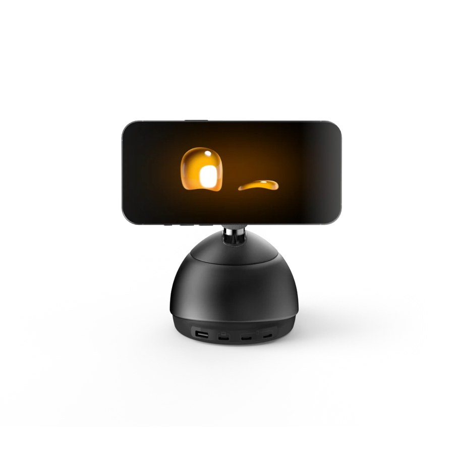
图：KEYi 官方 DeskMate Obsidian 商品图，展示手机＋底座组合，非移动 Loona Petbot；图片不意味着手机随箱附送。版权归 KEYi／原权利人，非开放许可。U209
身份与场景。 这是成人办公／桌面陪伴邻接产品，不计入儿童玩具核心样本。目标场景是会前资料、邮件草稿、日程冲突与自然语言协助，而不是毛绒抚摸养成；具体谁愿为桌上形体付费仍需用户研究。当前页只支持 iPhone 12+、MagSafe，不能扩展为 Android 或独立不带手机机器人。E09
互动循环与 AI。 连接获准工具→说明任务／提供上下文→助手准备摘要、提醒和草稿→用户审核确认。文本生成属于生成式助手宣称；与 Gmail、Slack、日历等连接是工具功能，不等于可以未经授权自动发信。页面称动作 AI 实时生成而非预设动画，这也是厂商声明，未验证动作生成方式；0.5 秒没有网络和计时条件，不作延迟实测。U209
硬件与分工。 3-DoF 无刷伺服底座复用 iPhone 显示和感知，官网同时宣传充电。厂家称脸部表情／注意力在手机处理，明确任务命令进云，工具权限可逐项撤销；拿走手机则进入物理休眠。休眠不等于断网仍能完成生产力任务。当前 Pull-Mode 只看用户指出的内容，旧文的主动读屏口径不同，缺版本日志，不能擅自解释为已升级或回退。E08E09
价格、服务与今年变化。 当前 en-no 页展示 $299.00（保留原符号，结算币种、税费和地区可售范围未核），声称基础使用不需订阅，更多用量另有 plans 入口，收费／停订额度待确认。可购买、三工作日发出和“从 October 9th 起”均为承诺而非签收。2026 可确认相关发布文与当前商品组合；公告的 4/3 发布元数据、8/20 修改日不是两次众筹冲突，也不能据网页时间锁定实际平台启动。E08U209
差异与启发（推断）。 复用手机可降低独立硬件复杂度，但占用手机、工具授权和云工作数据成为门槛；应验证身体动作是否比普通助手带来价值。验证问题： 断网并撤销一个工作账户权限后，已经排队的草稿、云记忆与本体动作各自如何停止或保留？
X05｜bibo：弱语言、多感官关系养成，GenAI 实现仍未证实
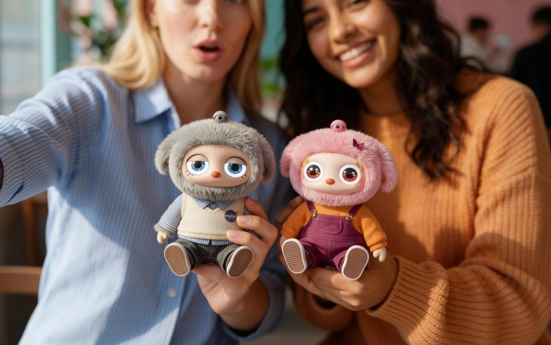
图：镭萌官网主页的 bibo 穿搭场景产品宣传图，非 OFweek 图片。只代表官方展示外观，不认证量产批次或图中动作；版权归镭萌／原权利人，非开放许可。U210
身份与买者。 杭州镭萌的非语言交互情感机器人，以潮玩角色、服装配饰与日常陪伴相结合。年轻收藏者、穿搭分享者及希望低负担陪伴的人是产品定位推断，不据媒体泛谈亲子需求认定具体儿童适龄。与“随问随答”设备不同，用户可以只看、触摸或带着它，而不必持续编提问。E10
玩法循环与 AI。 对视／触碰／带入不同场景→眼神、头部姿态和情绪音反馈→积累个性与熟悉感→换装、再次携带。官网列专属 bibo 语和情绪音效库：音效库是固定内容，感知、情绪分类和行为策略属于 AI 宣传但算法未核；“有个性、会记忆、能学口头禅”不充分证明 LLM 或生成模型。仍作非 GenAI 证据对照，不计入已确认生成式新品；也不反向断言它一定没有 GenAI。E10U210
硬件与分工。 官网称视觉、听觉、触觉多模态，并列表情识别、声源定位、温度／压力、振动反馈和陀螺仪等，均为未独立验收的规格主张，不能把营销清单写成拆机结果。App 图示提供手账／成长入口，主页称设备端情感引擎；本地与云训练、同步的边界、是否持续采集、断网行为和删记忆机制没有闭合，不能据“设备端”承诺全离线。
价格、服务与今年变化。 本轮未取得可执行的官方硬件报价、税运或订阅／停订条款，不用搜索摘要中的价格补表。9月29日报道转述7月开售，而9月9日融资稿称6月上市；当前官网仍有预约／早鸟入口，可能涉及批次／渠道但未获裁决，不能自行判为延期或已全面现货。融资稿支持镭萌与bibo的关联及千万级天使披露，未明币种，不证明GenAI或销售成效。C102报道的活跃用户时长既非独立测量，也非总体留存率；不由开售自动升级用户签收。E10U210
差异与启发（推断）。 非语言表达可能降低打扰与问答错误的显性风险，但并不消除情绪误识别、隐私和内容安全问题；潮玩外观能帮助首购，却要靠状态连续性留住复玩。验证问题： 能否用一周离线与联网对照说明哪些性格／记忆真正变化，并披露这些变化是否调用生成式模型？
G3｜儿童陪伴与电子养成（F01—F08、X09—X10）
F01｜Miko 3：可移动的儿童内容与语音终端
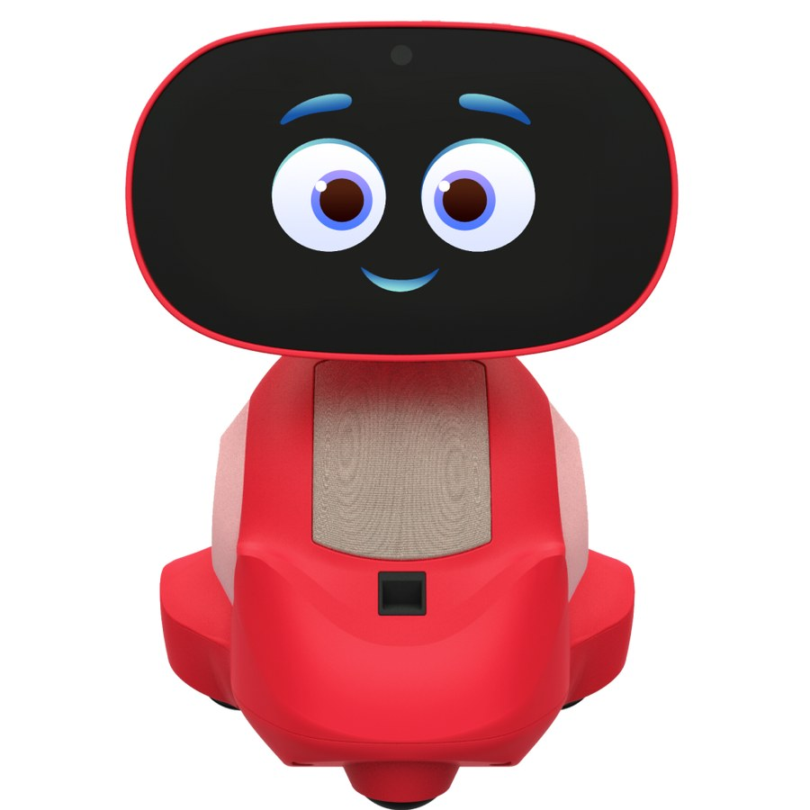
版本：Miko 3，非 Mini；Miko 官方商品图，权利归原权利方。U301身份与购买场景：面向5–10岁儿童的轮式屏幕机器人；典型使用者是孩子，付款及管理者是家长，放在家庭客厅／学习角做故事、问答和小游戏，不是学校采购平台或经验证的辅导疗效设备。孩子说“Hey Miko”→得到语音、表情或任务→完成小游戏／故事活动→再请求内容；家长用App限制应用并查看报告，构成孩子娱乐、家长管理两套反馈。P201
技术与依赖：官方列广角摄像头、双MEMS麦克风、ToF测距、里程传感和轮式运动。AI分类为传统人脸／声音识别＋脚本／内容库；生成式实现未知：网页提到深度学习、Story Maker，不足以确认每项都由大模型即时生成。首次配置要求家长App及Wi-Fi，非Max层与Max扩展层并存；停订不等于完全失效，但断网可保留的逐功能清单未取得，也未测推理延迟、中文识别及数据流。U301
价格／生命周期：既有当日可见记录为India地区控件下USD299 regular price，非美国价；运费结账计算、税未知。Max独立页为一次性年购$99／优惠$89及“月均$7.41”，不是每月扣7.41；试用、自续、续购仍待结账核对。本次HTML还混有$199促销与售罄模板，未确认选中配置，不替换原可见报价。官网及内容入口存在不等于现货和服务实测；本轮未取得明确2026版本升级公告。P202 U301
差异／弱点与启发（推断）：移动和表情能把平板内容拟人化，优势不等于课程更有效；授权内容、云和家长管理形成持续维护成本。值得借鉴的是免费基础玩法与可选内容分层，而非用“月均价”掩盖年预付。关键验证问题：在目标地区完成一次激活后，断网和Max到期分别保留哪些孩子实际愿意重复玩的功能？
平台补核（2026-10-10）：W101为Miko 3全球4.2／4,209评分及当前视图不可用；W104红色款由MIKO2销售并配送、3.8／198 ratings，非Walmart自营；不合计评分或替换原地区价格。
F02｜Moxie：既有硬件的条件式服务接续
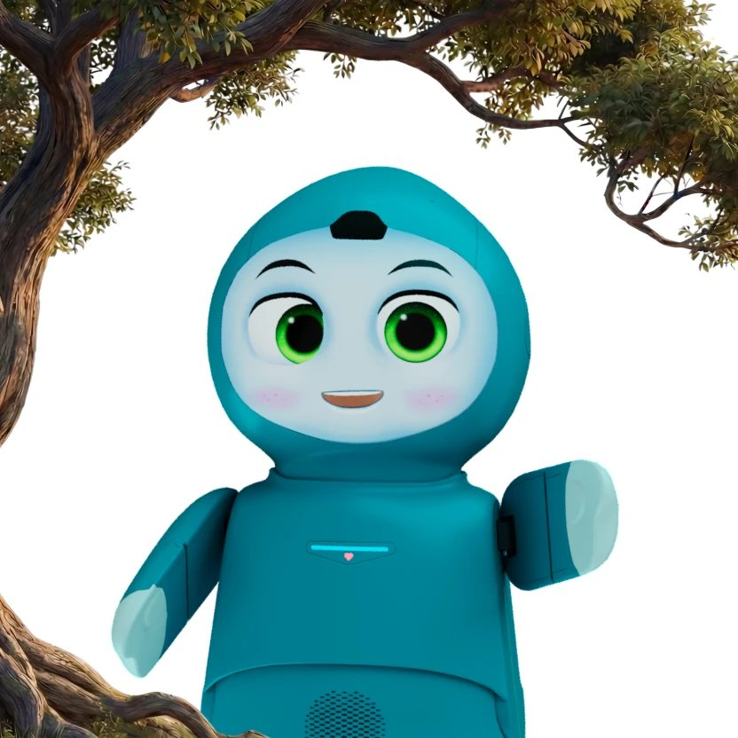
版本：Moxie既有机身；新运营方官网宣传图，非新硬件上市证明。U302身份与场景：原Embodied于2020年推出的儿童陪伴机器人；当前服务主体自述为取得相关权利的Moxie Robots, Inc.。孩子是互动者、家长是付款与账户管理者，适合在安静家庭角落轮流对话、故事、呼吸及兴趣活动；不能据营销认定治疗自闭症或替代专业照护。循环是孩子发言→听说灯提示与面部投影／动作反馈→任务或追问→家长和孩子纠正偏好；“长期记忆”等未来列表不能当现成功能。P209 U302
技术／服务边界：麦克风、胸部触摸唤醒、脸部投影和动作机身提供具身反馈；官网明确当前尚无人脸识别。AI属云端会话服务，是否采用何种生成模型、脚本占比未披露，标AI实现未知，不把旧版与新方能力混写。需App、Wi-Fi和付费服务；新方直言无服务近乎“paperweight”。旧机须达到v22.9.1501或以上，未达资格联系支持，并非所有旧机自动恢复；OpenMoxie历史计划不是本服务离线验收。P210 P228
价格与2026状态：硬件明确不再出售；$799只作2024-12美国报道的历史美元报价，税运未知。当前服务页$29.99/月或$4.99/天，ISO币种、地区、税及取消退款未锁定，不写成全球统一USD价。2026-02-15新Android App有更新记录，证明分发条目而非旧机恢复率。原数据不转移、原合同不承接；停售与继续有条件服务必须独立记录。P227 U302
差异／启发（推断）：表情和回合仪式感使对话更像伙伴，也把停服造成的情感损失放大。商业上应预留离线降级、迁移资格查询和可导出记忆，不能只承诺“会永远陪伴”。关键验证问题：一台符合最低固件资格的旧机，在目标地区付费后能否完成稳定配对、对话和取消服务全过程？
F03｜ROYBI Robot：家长编排的幼儿语言内容伙伴
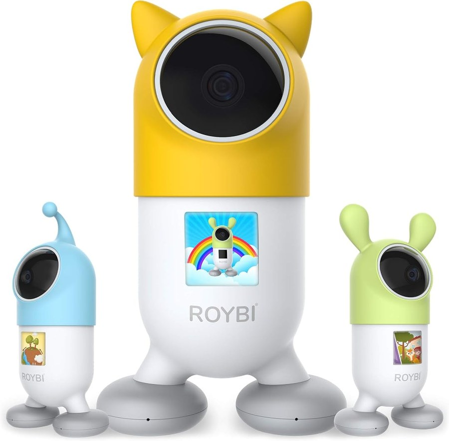
版本：原ROYBI Robot机身与可换帽展示，非三个产品代际；官网内嵌图，权利归ROYBI等原权利方。U303身份／场景：现行官网面向3岁以上儿童，自称AI教育伙伴，列英语、西语、法语、中文与1000+课程、故事、歌曲和游戏。使用者是幼儿，付款和排课者是家长，常见场景是家庭语言启蒙而非自主作业机器人；四语言介绍也不能证明各语言内容量相等或中文准确度。循环为家长安排内容→机器人提问／播放→孩子听说回应→进度报告→家长调整下周课程。P204 U303
技术与依赖：实物宣传图可见镜头、前屏和底座；官网提供镜头物理遮盖、家长App中的内容库、排程和词语／练习统计。语音学习与评估属于其AI宣传，但模型、语音判分、个性化算法和云端位置未在所读页交代，分类为内容脚本明确，传统AI细节及生成式均未知。不能把“小机器人”默认写成可自主行走或开放生成对话。App、账户、联网初始化及离线剩余课程没有本轮实机验证；也没拿到完整停订、停服后的功能矩阵。
价格／销售／服务：2026-10-10官网与roybi.world介绍可读，未取得带地区币种的现行硬件价、税运、可购买库存或有效订阅条款，因此均不拿旧媒体售价填补。网站存在仅证明内容页面继续公开；实际生产、履约、App商店可安装性、云接口和家长账户仍分列待验。本轮未取得明确2026硬件换代或服务更新公告，页面新外观不能当换代证据。U303
差异与启发（推断）：语言练习、镜头遮盖和家长排课形成相对清晰的家庭教育定位，但孩子是否愿意持续对固定课程回应，比“AI”标签更重要。应提供可试听课程、各语言样本及可核查的错误反馈，而非把课程条数当学习成效。关键验证问题：当前新用户能否在目标地区买到、激活并连续一周完成中文课程，同时导出有实际意义的进度记录？
F04｜Furby 2023：离线、有限但密集的表演反馈
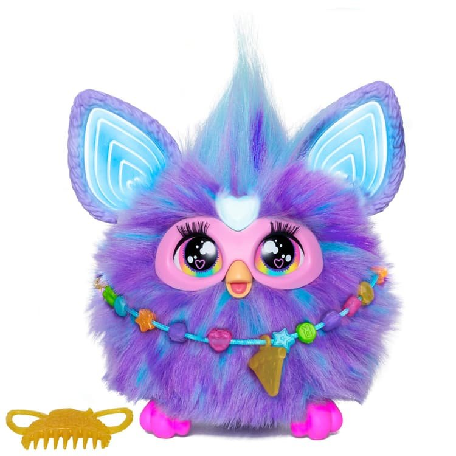
版本：2023代Purple F6743，非2012 App代、Connect或Furblets；Hasbro官方支持页产品图。U304身份／场景：2023年重新推出的主尺寸电子毛绒，官方支持页以F6743锁定紫色款，6岁以上；儿童主要使用、家长或亲友付款，适合生日礼物、房间伙伴和同伴聚会。大龄怀旧购买是合理场景推断，不以1998代历史销量证明2023代畅销。孩子按心形按钮唤醒、说固定指令→唱跳／灯光／模仿→抚摸、摇晃、假喂食或装饰→解锁更多回应，是有限内容的组合循环。P212 P225
技术分类：五种语音激活模式为Dance Party、Copy Cat、Tell My Fortune、Let's Chill、Lightshow；支持头部触碰、拥抱、喂食反应，眼睛动作与发光耳朵形成即时奖励，两只可互相互动。属于脚本状态机＋传统固定口令识别，不是生成式AI；600+回应是官方内容量声明，不等于600种语义理解。本轮新核官方明确“does not connect to the internet”，所以不能沿用旧代App资料。需4节AA，未附；不依赖App／云订阅，断网不构成其基本玩法前提。U304
价／现状／2026：本轮英国英文官方说明页没有硬件价格或购买库存，币种、税运及当前渠道成交价未取得；没有强制订阅价格。说明书与客服入口可达，证明支持材料在，不证明2026仍生产或现货。未取得2026此代固件／内容变化公告；不把新颜色和小款新品替换成此卡对象。
差异／启发（推断）：毛绒触感、动作、光效、配饰让脚本也有明确玩具价值，避开云停服风险；弱点是口令限制、语音噪声环境和重复内容可能使新鲜感衰减。值得借鉴多模态反馈、关机及可换电池设计，而非将复杂语言承诺强加给低成本玩具。关键验证问题：家庭噪声下孩子独立启动五模式的成功率及一周后主动重复次数是多少？
平台补核（2026-10-10）：W108为2023 Purple主尺寸对应页，4.61／顶端313、当前缺货，不证明全渠道停售；W111另为不同UPC的第三方listing，0评价不等于0销量，两页不合并。
F05｜Hatchimals Alive Mystery Hatch：孵化仪式与后续养成
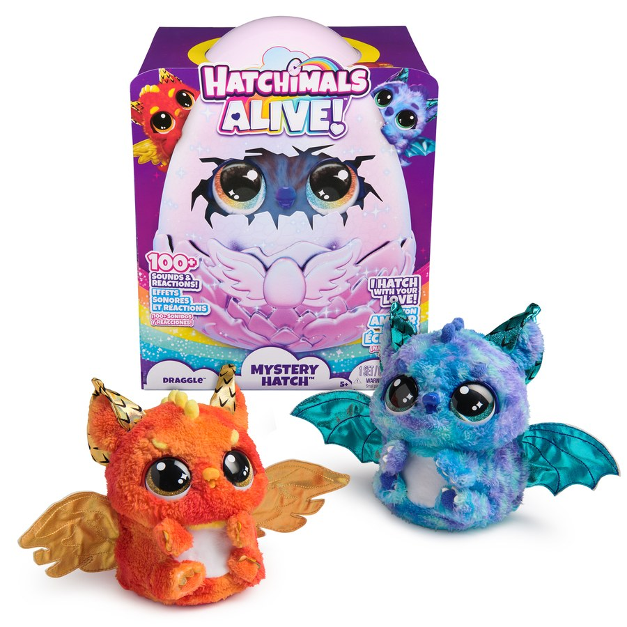
版本：Mystery Hatch Draggle；图示两种可能角色，单盒仅一只，不是两只套装；Spin Master官方图。U305身份与场景：本卡限定大型蛋内孵化的Mystery Hatch，以Draggle为代表，不混入Hatchimals Alive水孵化小玩具。官方标5岁以上；孩子负责照料和揭晓，家长／送礼者付费，生日、节庆开箱是强场景。第一循环是抱蛋、轻敲、抬起、摇动→灯光与声音渐强→彩虹光、雾效、音乐和破壳揭晓；第二循环才是喂食、抚摸、挠痒、躲猫猫、教说话→拍翅、摇摆和跳舞→继续照顾。P217 U305
技术／AI分类：动作与触碰输入、灯光、发声、雾效及电动机构构成感官戏剧，官方称100+声音和反应。保守归为脚本交互／状态机，没有取得生成式对话、开放语义理解或在线学习证据；“教说话”不能直接解释成训练语言模型。官方页列4节AA随附，未列App、云账户或订阅前提；因此资料所述核心玩法在玩具本体，但本轮没做断网实测，也未读取传感器料号、内部机构或雾效材料说明。首次孵化能否原样重复尤其不能靠广告推定。
价格与生命周期：2026-10-10美国区官方产品页能读到型号、玩法及包装内容，没有可核的当期价格、结账、税运或实时库存；不引用同名小款低价当此款售价。公开产品支持材料存在，与零售渠道现货、批次配件供应及长期机构耐久是三个问题；本轮均未作履约验证。没有取得此型号2026更新公告，也没有停产／停服的确证；“没有云订阅条目”不等于厂商作出永久维修承诺。U305
差异／启发（推断）：把孩子的照顾动作变成“我让它出生”的因果仪式，比随机盲盒多了参与感；但若价值过度集中在一次破壳，后续养成可能难留住孩子。商业应分别测试开箱峰值和七日后玩法，耗材或配件不能隐藏在礼物成本外。关键验证问题：完成第一次孵化后，第七天孩子仍主动使用哪些玩法，孵化机制和雾效是否可按说明安全复用？
F06｜Bitzee原版：触碰数字宠物，而非开放聊天
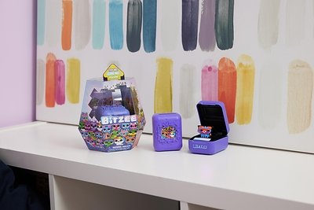
版本：2023原版紫盒、15宠物；Spin Master／CNW首发新闻图，保留完整场景。现商品页错配的绿盒Magicals图已弃用。U307身份／场景：Spin Master于2023年发布的掌上数字宠物盒，5岁以上；孩子使用、家长或送礼者付款，可在桌面照顾、展示给朋友。不是Disney、Magicals或后来的Hamster Ball。它的卖点是手可触及的动态图像与倾斜操作，而非能听懂所有问题。官方“screen-free”是营销措辞，不应翻译为没有电子显示或没有视觉刺激。U306 U307
循环与技术：原版从像素小狗开始；喂食、抚摸、清理、摇睡→爱心值累积→幼体变成成年和Super Bitzee→解锁专属小游戏与吸引下一只的点心，最终收集15种。缺少照料会跑走，但可用照顾和点心召回，惩罚不是不可逆死亡。滑动、倾斜、摇晃与触摸触发声音和反应，分类为脚本养成／状态机，非生成式AI。官方列3节AA随附，所读资料未要求App、云或订阅，基本养成作为本体玩法描述；具体显示机构寿命和断电存档未测试，不能从宣传图推定耐用性。P216
价／状态／2026：新增原始新闻稿明确2023-06-22公布的首发建议价USD29.99、拟2023-08-01在主要渠道推出；这是历史美国渠道背景的美元建议零售价，税运未交代，不是2026现价。当前官方原版产品页仍在，但本轮发现其图片实际为绿盒变体，正文和图库存在版本冲突；价格、现货与生产状态必须另验。没有取得原版2026更新或订阅变化公告，更不能以品牌新款证明原版仍供货。U306 U307
差异／启发（推断）：相较纯屏幕按键宠物，它把“摸到角色”变成有辨识度的展示动作；有限收集和即时反应也能产生重复玩耍，未必需要云模型。弱点是角色收齐后的动力、运动显示件耐受和单机分享边界。关键验证问题：儿童正常触摸数周后，显示反馈是否稳定，收集完成后还有多少主动游戏需求？
平台补核（2026-10-10）：W105原版15宠物Walmart页4.6／1,114 ratings且缺货；W106Target同系列由Super Deals卖并配送、4.14／顶端37，包装批次完全一致未核，不合计评价或替换原价；Lazada混代际sold不归本卡原版。
F07｜Tamagotchi Uni：本体养成与可下载内容分层
官方视频：Buy a Tamaverse Ticket and Enter the Tama Portal! — Tamagotchi US，2024-03-29，1:23。已核题名、发布者、说明及长度，未播放／未做逐秒核验；Uni票券演示，不是Paradise。官网明确限制转载，故不复制Bandai图片。U309
身份与场景：Uni是独立代际的腕戴／掌上彩屏养成玩具，本卡以Blue作为实物定位；官方明确颜色间玩法相同，不把每种颜色当新品计数。儿童照顾宠物、家长付款，成人也可自购收藏是场景推断。喂食、清洁、小游戏与外出活动→性格及成长反馈→装扮、社交和区域内容→继续照顾，核心是长期养成节奏而非对话机器人。P213 U308
技术／依赖：本体屏幕、按钮和充电LiPo承担日常玩法，Wi-Fi负责部分联网／下载功能；传感器的完整型号清单本轮未取。AI分类为脚本／规则养成，未见生成式功能证据。官方FAQ明确Tamaverse并非整体必须联网，部分可离线访问，故不能写“断网完全不能玩”。票券下载需Wi-Fi，不能把可选区域内容和基本设备玩法捆绑为强制月费；长期重新下载权与停服后可用边界仍待实机核验。P215 P226
价格／2026生命周期：本轮没拿到Blue当期硬件价、地区库存、税运。票券店既有同日记录BABY'S DREAM ¥990、Sanrio ¥1,210及免费区，但未锁区和ISO币种，不冒充美国／日本统一价；内容票券不是已证实的自动续费订阅。官网列2026-10-01等内容公告，同时安全支持仍写至2026-07-13；内容继续更新不等于安全修复期延长，也不意味着已停服。商品页可达、内容公告和机器能成功下载是独立状态。P213 U308
差异／启发（推断）：成熟养成循环能承载可选付费场景，减轻“买硬件就必须续费”的阻力；弱点是票券、账户、地区及安全支持边界不直观。商业上应让基础玩法离线完整，并明确每类下载权的寿命。关键验证问题：安全支持截止后，新购机在目标地区还能否完成安全初始化，旧票券迁移与离线内容各受何限制？
F08｜Hello Barbie DKF74：语音玩偶的停服反例
版本：Hello Barbie DKF74，2015；Mattel官方支持页55×110原始缩略图，不放大冒充高清图。U310
身份／场景：Mattel Hello Barbie Doll，货号DKF74，官方字段为Released 2015、Discontinued 2015，6岁以上，不能与Hello Dreamhouse或后来的Barbie产品混合。孩子扮演与芭比交谈，家长购买并处理联网及账户；相比传统换装玩偶，它曾将“她会回应我”作为数字附加价值。循环是孩子触发发言→联网识别→玩偶回应、聊天或游戏→孩子继续说；实际回合自然度、覆盖话题与疗效从未在本项目测过。P224
技术／AI边界：官方明确Wi-Fi与speech recognition，并有Companion App配置／网络故障支持；内置不可更换3.7V LiPo。本卡保守归传统语音识别与内容交互，生成式未知／无已核证据，不把2015年的“对话”自动归为现代大模型，也不虚构传感器、自由走动或机械动作。语音服务依赖远程系统；断网会影响会话，不能因为娃娃仍能换装就声称电子功能已离线化。U310
销售与服务各自状态：当前官方支持页明确该玩偶及Dreamhouse已停产，而且服务不再工作；因此不能将旧App下载链接仍留在页面上解释为服务存活。停服具体日期未给出，2015停产字段不是云在2015年关闭的证据，原因也不能擅自归为隐私争议或企业倒闭。2026未取得重启／新维护公告；本轮没采集可信当期二手价，历史硬件金额、币种、税运与当时订阅条件亦未重新核定，当前无可供新用户购买使用的官方会话服务。P224 U310
差异／启发（推断）：经典实体形象降低理解门槛，但玩具寿命与云服务寿命错位会把“能收藏的娃娃”降成“不能继续对话的设备”。可借鉴的不是恐惧联网，而是把账户关闭、数据处置、家长通知、离线残余功能和电池寿命写进退出方案。关键验证问题：当前持有者能否通过官方支持明确关闭历史账户／删除数据，并确认哪些本体功能仍安全可用？
X09｜Tamagotchi Paradise：用缩放和繁育扩展本地养成
官方视频：【Tamagotchi Paradise】Tamagotchi Paradise商品PV【たまごっち】 — たまごっち/Tamagotchi【公式】，2025-05-21，0:45。已核题名、发布者和说明，未播放／未逐秒核验；对应2025首发代，不以2026 Neon Planets画面替代。官网禁止擅自转载图片，采用官方视频链接。U314
身份／场景：Bandai于2025-07-12在日本推出的Paradise，本卡以Purple Sky首发机为锚；6岁以上，孩子或成人养成爱好者使用，家长送礼或成人自购。它不是Uni颜色版，FAQ明确不与Uni等旧代通信、不能用Uni下载码。主要场景是随身碎片养成、两机面对面交流，以及有条件到店连接Lab Tama。U311 U312
玩法与技术：旋转／长按Zoom Dial在细胞至宇宙尺度照料，喂食、清理、治疗、小游戏→环境与照料影响成长→繁育遗传组合→收集图鉴。官方称12族、50以上基础角色及50,000以上组合可能，不是五万份独立编写角色或AI生成图像的证据。分类为脚本／规则养成与组合系统。本体屏幕、实体旋钮／按键、设备对接通信，使用2节AAA另购；FAQ明确单机也可繁育，不必为基本玩法买两台。未列App／云订阅前提，店头联动是增益；本轮没做断网或数据恢复实测，FAQ称丢失数据不能恢复。U311 U312
价格与2026变化：日本官方Purple Sky建议价JPY6,380含税，页面保留2025发售日；是当日所见建议价，不是实时成交价，运费及库存未核。2026-10-09系列首页宣布Neon Planets拟11月21日发售，并出现My Lab Tamagotchi等新品；截至10月10日须按宣布／计划处理，不把未来版本的五级缩放并入首发机。系列活动持续、具体旧款在售和实际门店设备在线状态分别待验。U313
差异／启发（推断）：旋钮把抽象养成变成可解释的物理操作，繁育组合增加重玩而不必付云推理费；弱点是代际不兼容、数据不可恢复及线下内容可达性。M08仅支持协会将其列为财年趋势产品，不能证明本型号销量或AI市场份额。关键验证问题：不接店头设备、只买一台时，首月内容是否足够，儿童能否理解旋钮的尺度与照料关系？
X10｜MicroPets／マイクロペット：2025日本新系列GEN1
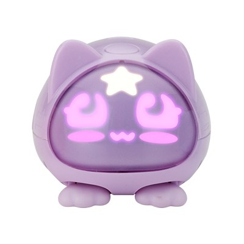
版本：GEN1 キャット，JAN4904810947202；TOMY／The Moose Group官方图，非早期同名MicroPets，亦非2026 GEN2。U315身份／场景：依据M08协会提名再向厂商定位，限定TOMY与Moose标识下、2025-10-31开始预订宣传的新系列GEN1 Cat／Bunny／Puppy；图与货号锚定Cat，不把历史同名迷你机器人规格搬来。亲子小礼物、孩子桌面养宠和朋友带机聚会是场景推断，付款者为家长或赠礼者；所读正文没确认适龄数字，不凭体积小就推荐幼儿独玩，官方提醒防儿童／宠物误吞并由监护人看护。U315 U316
反馈循环与技术：表情、声音及动作共50种以上；孩子回应“聊天”“上厕所”等请求→成长升级→头部标记颜色反馈等级→再解锁／触发互动。两台以上可通信，一起跳舞、竞赛和唱歌。官方展示发光面部和本体动作，本轮未取得完整传感器、通信物理层及电池参数，不能套用旧代声控／红外等细节。AI归脚本／规则型宠物，未见生成式或云模型证据；“かしこい”只是聪明的营销说法。U315
本地与服务：基本玩法按本体及近端机间互动描述，未列必需App、云账户或订阅。官网另宣传2025-12-11上线的Roblox体验，它是品牌数字扩展，不是已证明的硬件激活条件；断网剩余功能与GEN1／GEN2互通仍未实测。保留说明书入口并不保证将来维修、零件或应用持续维护。
价／2026状态：日本官网GEN1和GEN2均列JPY2,498含税建议价及“発売中”，运费未核；Cat官方商城链接本轮HTTP404并显示无相应商品，故不能升级为实际现货。2026-05-28官网宣布第二弹预订、计划7月下旬发售，当前单列GEN2；此卡只记录变化，不把新代额外算作本卡样本。M08为2025财年协会趋势分类，不给本代独立销量，更不等于生成式AI需求。U315 U317
商业启发（推断）：低价、可携带及多机合玩能促成礼物和同伴传播，风险是为了完整社交玩法需要第二台，有限回应也会重复。关键验证问题：当前渠道交付的JAN与GEN标识是否一致，GEN1单机和跨代双机分别能完成哪些玩法？
G4｜编程创造、机构／照护邻接及内容载体（F09—F15、X06—X08）
F09｜Sphero BOLT 原版：把程序变成滚动和光点
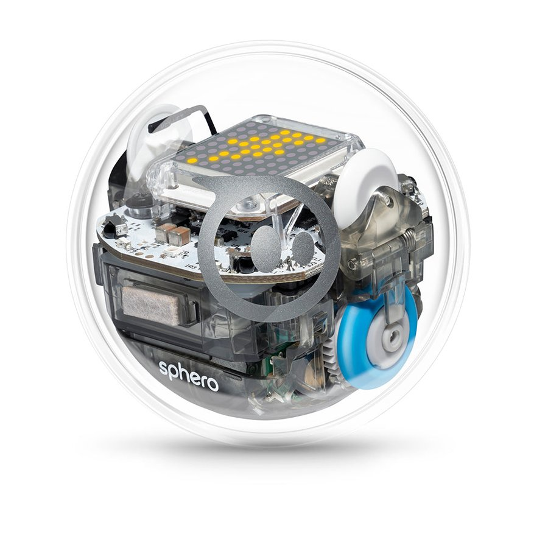
原版 BOLT，非 BOLT+；Sphero 官方图。U401身份、谁买来做什么。 本卡锁定 K002ROWFFP 原版透明球，不把 BOLT+ 的显示屏或新功能并进来。使用者是学龄学生，购买决策多由家长、教师或学校作出；典型场景是桌边编程、地面迷宫和课堂小组挑战，不是能自由聊天的机器宠物。P205
玩法循环与 AI。 先画一条路线或拼出“转向—前进—点灯”的程序，让球运行；观察撞墙、方向和速度误差，再改代码挑战下一条路线。进阶可读取传感器、设计球间互动。Draw、Blocks、Text 是编程入口；传感器触发与用户程序不等于生成式 AI，本轮没有原版内置大模型对话证据。它的反馈是可见动作和灯阵，不是替孩子自动完成任务。
硬件与依赖。 透明球内置驱动、8×8 LED、运动与环境传感器，使用感应充电底座；本体负责采样和动作，手机／电脑上的 Sphero Edu 负责创作、连接及课程入口，网页另列家用 Sphero Play。官方称 Edu 免费，但安装更新、活动下载与账号服务不同于本地执行；完整断网流程未实测，不能写永久免网，亦未找到基础强制月订阅。U401
购买及 2026 状态。 2026-10-10 官方原版页仍为 $179、Add to Cart / Quote；美国销售语境明确，但未结账锁定 ISO 币种及配送地区，税运在结账／报价计算。页面推荐后继 BOLT+，不等于原版已停售；没有核到原版在 2026 年新增硬件版本或销量。
差异、弱点、启发。 球体把抽象指令变成可测的真实运动，造型中性，适合跨学科活动；弱点是没有机械拼装、容易受地面与方向校准影响，且仍需场地、终端和成人引导。推断： 值得借鉴的是短反馈、可重复挑战与课程复用，而非给球附会人格或 GenAI。关键验证问题： 首次设置后彻底断网，孩子能否独立完成“新建—下载—运行—改错”的完整一轮？
F10｜Wonder Workshop Dash：不用组装的入门编程角色
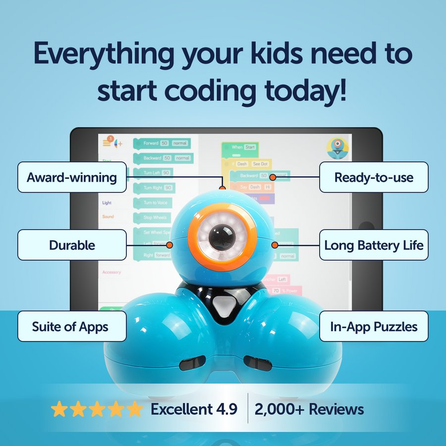
Dash 官方渠道图；平板为场景道具，图中评分不作独立证据。U402身份与场景。 锁定 Dash、SKU1-DA03-11，不含 Cue 或 Dot。官方渠道称适合 6–11 岁；家长可作入门 STEM 礼物，教师可用作短课和小组编程。Wonder Workshop 当前明确属于 MORAVIA Education，品牌入口与接续销售渠道可相互核对；平台覆盖学校数不能转换为 Dash 台数。P219 P220
玩法循环与 AI。 孩子在 Blockly／Wonder 中安排走路、转头、灯光与声音，发到机器人，观察执行，再改变条件完成迷宫、舞蹈或故事。角色外观和动作让调试不像纯代码练习；它不是替用户自由推理的聊天伙伴。障碍响应、听声反应和预置行为属于传感器规则／程序控制，不能因“机器人”和图形编程就记作 GenAI。
本体、App、云。 本体有轮式移动、可动头部、灯光和扬声器，官方明确没有摄像头；声音感知不等于没有数据处理。免费移动 App 下载和安装需要网络，官方称安装后使用可离线；web Blockly 需要互联网。Make Wonder 的课程／课堂管理为另售服务，不能把它说成基础机器人必缴订阅。停订具体失去哪些教师功能、已有作业能否导出尚未实测。U402
价与状态。 2026-10-10 官方渠道目录为 USD189.99、available=true，单机含 USB 线和两块积木连接件；不是图中平板全套价格。以美国销售渠道报价观察，配送覆盖、税费及运费未结账确认，付费教育服务费率未核。2026 可确认的是当前销售和服务承接入口，不把未标日期的品牌文案当作当年新品事件。
差异、短板与启发。 相比 mBot2／LEGO，开箱即可运动，降低家长第一天的装配负担；代价是机械结构较固定，后续新鲜感依赖挑战内容、外设和老师设计。电池维修、移动系统兼容以及免费层边界是长期风险。推断： “立即会动—逐渐会编程”的阶梯可降低入门流失，但不能据此宣称提高学习成绩。关键验证问题： 不购买 Make Wonder 时，普通家庭能获得多少连续进阶内容，而不是只完成几次动作演示？
F11｜Ozobot Evo：纸上的色码就是控制界面
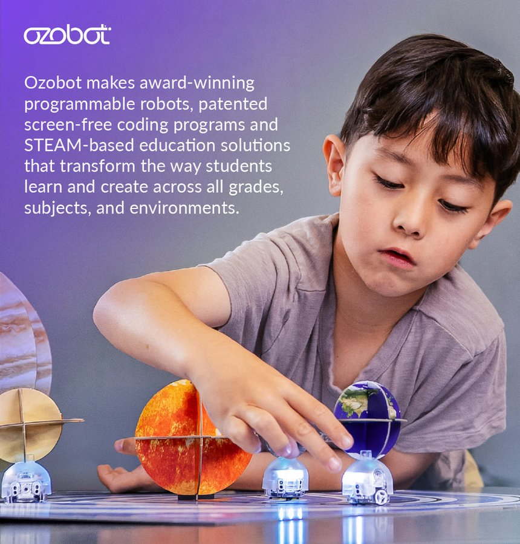
Evo 使用场景；图中多台用于演示，不代表单台 Entry Kit 数量。U403身份、购买者与场景。 本卡为 Evo，单台代表报价采用 Entry Kit、SKU050110-01；不混 Bit、Ari，也不把课堂套装另计产品。官方面向家长、教师及 K–12 学生，适合纸上路线、跨学科手工作业和两人协作。“供1–2名学生使用”是配置建议，不能当作年龄认证。P218
玩法与 AI 边界。 孩子画线、插入颜色组合，让小机器人识别并改变速度／方向；失败就检查线条宽度、颜色顺序和校准，再设计复杂地图。另一条路径是在线 Ozobot Blockly 的多级图形编程。这里的核心是光学识别、循线和规则执行，既不是自然语言生成，也不会自动编写故事；课程讲 AI 或广告写 AI-ready 不证明 Evo 本体拥有大模型。
硬件和离线。 小型轮式本体带光学与接近传感器、BLE、灯光、扬声器和可充电电池，负责读取路面信号并作动作。纸笔色码的无屏路径不依赖孩子持有手机；在线 Blockly、教师资源及相关设备管理则有浏览器／网络依赖。页面称有 700+ 免费 STEAM 课程，未发现基础强制月费，但课程数量不是完成率，完整编程传输与断网组合未实测。U403
价格和 2026 变化。 2026-10-10 美国官方目录单套 USD175、available=true，含一台 Evo、五支色码笔、线和保护盒；运费结账查看，学校免税须具备资格，不能按免税包邮算成本。现页支持与课程入口仍在，不足以证明 2026 发布新一代或披露当年销量。
具体差异、弱点、启发。 它把控制界面移到纸和手工场景上，与依赖平板的 Dash 形成差异；小空间即可复玩。短板是纸张、光线、墨色与传感校准会影响识别，小型本体的保管和低龄安全也需成人负责。推断： 可借鉴“低成本耗材产生无限新关卡”，但要把失败反馈设计清楚，免得孩子把识别问题当成自己不会编程。关键验证问题： 在普通家庭纸笔和光照下，儿童第一次画的路线有多大比例能直接运行？
F12｜Makeblock mBot2／mBot Neo：从组装小车到传感器项目
官方演示《Meet mBot2》（当前频道 xTool Education；2021 发布，元数据指向CyberPi代mBot2，非初代）。仅核标题/频道/简介/发布时间及播放器静态起始画面；未播放验证动态内容，不作动作连续性/性能/2026供货证据。U404
身份与人群。 官方把 mBot Neo／mBot2 放在同一支持分类，不重复计数，也不混 mBot1 或 Rover。定位高年级小学至中学，购买者包括家长、STEM 教师与学校；家庭更偏亲子组装，课堂更偏编程与传感器实验。P221 P222
玩法循环。 先用螺丝刀搭成双轮车、连好模块，再试预置程序或遥控；随后写循线、避障和测距任务，比较编码电机反馈与实际行驶，改参数或机械结构后再跑。进阶通过 mBuild 和金属件扩展，不只是点一个按钮看固定表演。具体关卡由教材／用户程序决定，不能把建议玩法当已在本机运行。
AI 与硬件分工。 核心是 CyberPi、mBot2 Shield、超声波2、Quad RGB 与编码电机；本体采样并执行代码，App 负责遥控，mBlock5 负责图形编程及相关项目。传感器闭环与 Scratch／Python 学习不是 GenAI；即使接入语音或云端 AI 扩展，也要逐功能核实模型、账号和费用。本轮不把可联网微控制器写成标配生成式聊天机器人。完整本地编译、下载后脱机运行、云扩展断网行为尚未逐项测试，基础强制月订阅未查到，不代表所有内容免费。
价、销售与 2026 变化。 截至2026-10-10，既有官方支持文档仍有组装、固件和预置程序入口；本轮直接 HTTP 支持页403、浏览器连接中断，官方营销入口又跳到 xTool 中国站。因此现价、币种、区域库存及税运均未确认，搜索价格不算有效报价。2021官方介绍视频仅核标题/频道/简介/发布时间及播放器静态起始画面；未播放验证动态内容，不作动作连续性/性能/2026供货证据。
差异、弱点与启发。 相比 Dash，mBot2 更像可拆开的工程平台，能看到电机、传感器与机构的关系；相应代价是装配、线材、电脑驱动和扩展兼容带来的支持成本。推断： 商业价值可能来自持续的工程挑战和模块复用，而非首次开箱“AI感”；区域购买入口失效也会损失本有兴趣的家庭。关键验证问题： 在目标地区买到的具体套装，能否不购买额外模块／云服务完成一个可重复的循线—避障项目？
F13｜LEGO MINDSTORMS 51515：实体可重搭，软件有生命周期
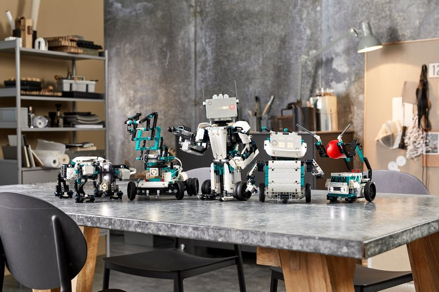
2020 官方发布图；五款模型展示不代表一套可同时装成五台。U405身份与用途。 Robot Inventor 51515 是家庭／爱好者套装，官方 10岁+、949片、五种主模型；不是 EV3，也不是 SPIKE Prime。购买者通常是家长或积木／机器人爱好者，目标是长时间搭建、调试及创造自己的机构。P207
玩法循环及 AI。 先搭建某一模型，再用 Scratch 式拖拽或 Python 编程，让它搬物、投球、巡航或响应障碍；观察机构与程序的共同问题，拆改后重试，之后换成另一模型。角色名称与“会思考”宣传不构成生成式智能：本卡能核实的是传感器、用户代码和预设活动，没有自由对话大模型证据。
硬件及软件分工。 六接口 Hub 配5×5灯阵、六轴运动感知、蓝牙、扬声器及充电电池，配颜色／距离传感器和四个带位置反馈的电机。App 提供搭建步骤、编程和遥控，本体执行动作；无基础强制月费证据，但不能把可脱机执行旧程序等同永远能在新电脑安装软件。U405
价格、退役与 2026 变化。 官方产品页已退役，$359.99 是残留价而非现货价；本轮补读2020-06-12发布稿，也证实当时宣布价格为 £329.99／$359.99／€359.99，税运没有统一口径，二手现价未核。更重要的是，LEGO 开发者在 Microsoft Store 明示 Robot Inventor App 于 2026-10-01 停用、不再更新或支持，引导转向 SPIKE App，同时警告不能保证1:1体验或固件替换。这补齐旧P229／P230的软件期限缺口；不代表已安装软件当天全部失效，更不能把 SPIKE 的2031期限回填为本 App 承诺。U406
差异、弱点与启发。 实体重构与程序共创比固定造型玩具更开放，但搭建时间、专用电池和退役软件提高接手旧套装的门槛。推断： 机器人教育产品需要在售时就规划离线安装、项目导出和迁移说明；积木耐用不自动等于数字功能耐用。关键验证问题： 旧51515用户迁至 SPIKE 后，原有项目、传感器及全部五种模型具体能保留多少能力？
F14｜LEGO Education SPIKE Prime 45678：机构教育邻接，不能当家庭销量
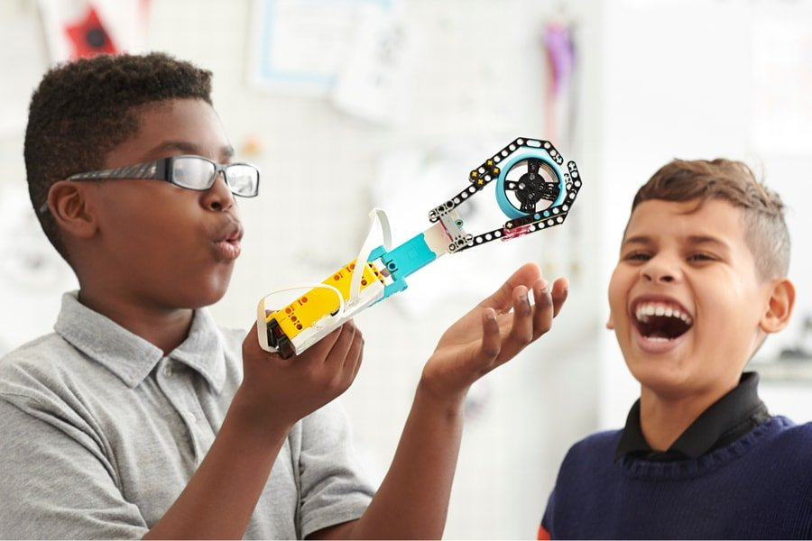
LEGO Education 官方课堂图，产品为45678；非 Essential。U407身份、谁采购。 45678 对应 SPIKE Prime，官方年级6–8，面向学校课堂、课后俱乐部及竞赛；老师／机构采购与课程实施是核心，不能混进家庭玩具核心分母。与51515同属可编程积木不代表软件、支持期限或采购预算相同。P208
玩法循环与 AI。 教师给出工程问题，学生组装机构、接电机与传感器、编写程序，测量结果、发现误差，再重搭或修改控制条件。重复价值来自一套电子件支持多种物理模型、小组讨论及课程目标，不是无限聊天。基础玩法是代码与传感器规则控制；官网在退役页引导新的 Computer Science & AI 产品，并不意味着旧45678突然内置生成式 AI。
硬件、App 与保存。 本体由可编程 Hub、电机、传感器及 LEGO 机构构成，App 承担编程与学习界面，本体负责感知和执行。项目在本地设备保存；官方特意说明 web端项目需要下载到本地磁盘或云文件夹，不是自动在线保存。这只确认文件保存方式，不证明首次安装、所有教材或完整离线工作流均无需网。基础强制订阅未见，电脑、教师培训、配件和竞赛费用另计。U407
2026 生命周期及价格。 官方已于 2026-06-30 结束公司销售，现页 Retired／contact us；当前一级售价不适用，渠道尾货、历史价和税运未核。SPIKE App 承诺修错并兼容受支持系统至 2031-06-30，退役后不加新功能；之后仍在线但不再更新，可能不兼容新系统。FIRST LEGO League 使用资格只延续到 2027–2028赛季，不能写到2031。页内误写 Essential 的段落不覆盖标题、货号和Prime身份。
差异、弱点与启发。 它卖的不只是机器人，也是课堂可组织性与教师资源；家庭照搬机构方案可能付出不需要的成本。短板是退役后新备件与赛事迁移不确定，质保备件安排不等于永久零售供应。推断： 长期明确的维护期限能减少学校采购风险，但应与比赛资格和硬件采购期限分别管理。关键验证问题： 现有学校按其电脑换代计划，2031前的软件维护承诺是否足够覆盖课程与备件生命周期？
F15｜KEYi ClicBot：改变身体，再赋予它动作
官方宣传《The Ultimate Clicbot Official Video》（当前频道 LOONA PETBOT，元数据指向2020年ClicBot，非Loona本体）。仅核标题/频道/简介/发布时间及播放器静态起始画面；未播放验证动态内容，不作动作连续性/性能/2026供货证据。U410
身份与场景。 ClicBot 是 KEYi 的模块化娱乐／教育机器人，不是同品牌 Loona。家庭购买者可以是亲子用户和创作型爱好者，使用场景是桌面角色、轮式小车及自制机构。2020厂商新闻稿面向儿童 STEM，但准确硬件安全年龄未取得，不能把 Google Play 的3岁+内容评级当成硬件适龄。U408
玩法循环。 先把“大脑”、关节和轮子等模块卡接成预设角色，摸一摸、让其动作；然后改造身体，用 App 的动作脚本或图形编程安排一段动作，运行、校正重心与连接，再分享作品或参考教程。厂商历史稿描述 Bic／Bac 两种预设性格、Blockly及Python；“表情像活物”主要来自动画和程序，不证明有开放式理解或生成式对话。
硬件与 AI 边界。 具屏幕脸部的大脑模块、执行关节、轮子、骨架和按套装选配的足底传感／吸盘提供不同运动能力；镜头、手机支架与跟拍场景不能不加区分地解释成全套自主视觉。本体承担反馈与动作，App 是编程、教学视频及社区入口。不同套装模块数不同，不能以任意形态承诺入门盒全部能做。没有核到本产品标配 LLM 的一手证据。
价格、联网与 2026。 2026-10-10 未确认官方硬件现货、地区／币种现价及税运；2020新闻稿“预售299美元起”只是历史起价，不当现售。官方开发者 Android 条目仍列出，更新日2025-12-07；App下载／社区依赖平台，但新账号、配对、离线动作及必要订阅未实测。10K+ App下载不是硬件销量；2026未核到新版硬件或继续量产证明。P223 U409
差异、弱点与启发。 相比固定形态机器人，换身体本身就是新玩法，兼顾角色表达与机械创造。弱点是连接磨损、关节和专用模块补货、配置复杂度以及App／社区寿命；不把吸盘攀爬宣传当安全验收。推断： 模块复购可以扩大创作空间，也可能放大售后与配件依赖。关键验证问题： 一个2026新用户不依赖旧账号，能否完成注册、配对、下载教程、编排并离线重播自己的动作？
X06｜AOGU CoCo：成人照护邻接，Beta 预约不等于交付
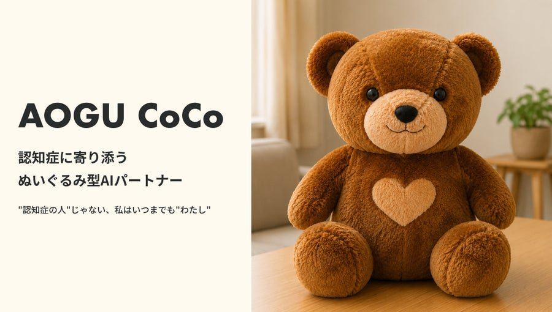
2026先行预约版；AOGU经PR TIMES提供的宣传图，版权归相应权利人。U411身份与购买者。 CoCo 是面向日本高龄／认知症照护的毛绒型伙伴，使用者是长者，决策和付款者可能是子女、家庭或照护机构；不是儿童玩具核心样本。2026-07-29 企业公告明确 Beta／先行预约，应与成熟量产消费机器人分层。E11
陪伴循环。 家属在交付前提供经历、性格和喜欢的话题，服务方做个别化设置；长者日常说话，CoCo按个人背景回应、在不安时转向熟悉话题，并按时提醒饮水、吃饭和体操；家属再用配套App调整、了解互动。这里的长期价值假设是减轻重复对话的负担，而不是完成游戏关卡，是否真正减少照护压力尚未受控验证。
AI、本体与服务边界。 厂商声称会记忆与个性化交谈，但公告没有明确 LLM 或生成式实现，本卡分类为“AI实现未知、GenAI待核”。可确认的是毛绒实体与家属App、服务侧个别化设置；麦克风／扬声器具体规格、触摸感知、运动机构和本地／云推理分工未披露。价格含通信费也不等于已核蜂窝制式。断网、退订后的可用功能及数据保留尚不清楚，不能承诺离线陪伴。
费用与阶段。 日本公告先行初期费由 JPY35,000降为10,000，含税；租赁订阅月费为聊天5,980／生活支持8,980／全托9,980，均含税及通信，首月免费、次月收费；邮寄但运费承担未明确。公告称8月下旬以后准备好再陆续寄送，确认可寄日后才通知付款。50是预约名额，不是成交、发出或签收数；“累计100名以上使用”包含机构及短期体验，也不是付费客户。10月截止时没有新增交付证明。U411
差异、弱点、启发。 差异是买者与用者分离、以生命经历做设置、把客服和护理知识包进租赁。风险是敏感健康与家属信息、错误回应、过度依赖及高持续费用。官方明确不代替医疗／治疗，个体好评不构成疗效。推断： 可借鉴的是角色分工与照护工作流，不是把医疗焦虑当营销承诺。关键验证问题： Beta交付后，在何种断网／误答情形下能安全降级并转交真人照护者？
X07｜Romi 系列：代表图为 Lacatan，不代表初代或全部年度用户
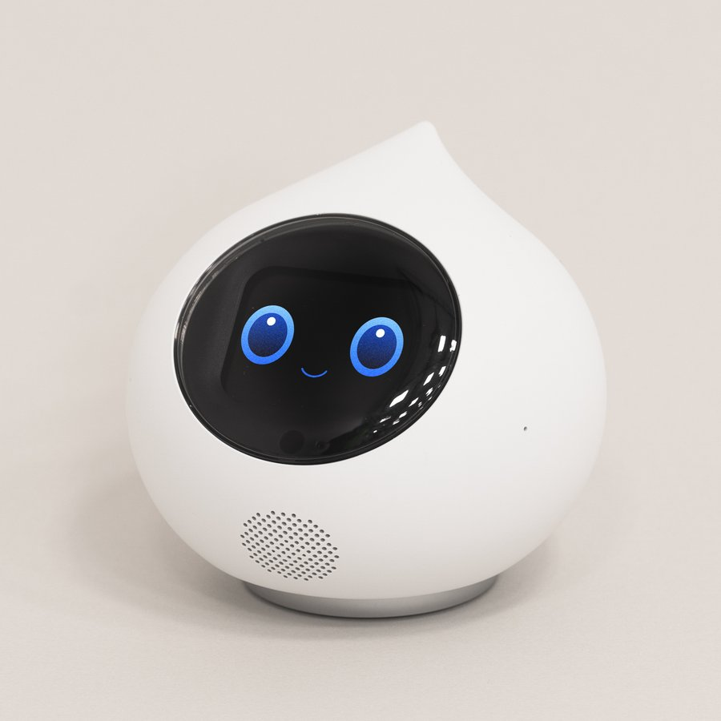
当前 Lacatan 自然白；不能以此图代表S05的全部122份档案。U413身份、用户与代际。 Romi 是 MIXI 的会话机器人系列，可用于独居者日常闲聊、家庭共处及子女送长辈。旧P01／P02与新 Lacatan 必须区分；本图及下述新机价仅指 Lacatan，不能把初代、Hello Kitty型或系列活动全部算成新机销量。
玩法循环与真实 AI。 用户讲日常小事，Romi用语音、屏幕表情和点头回应；再通过问候、歌曲、熟悉话题与记忆形成下一次交谈的理由。官方明确AI发话生成，不只是有限脚本。当前介绍页说明 ChatRomi1.0 可用于P01／P02及Lacatan；Lacatan另有 ChatRomi2.0，结合RomiCore与外部AI API、搜索及图像理解，支持口吻设置和长期记忆。不能把这些新功能自动归到旧机，也不以厂商“自然、准确”宣传代替实测。U412
本体、App、云与停订。 Lacatan有可动机身、屏幕脸、触摸反馈及视觉／语音交互，USB-C充电；本体负责感知表达，App用于设置与查看，听声、生成回复和记忆涉及专用云服务。官方称全部会话需稳定Wi-Fi，断网不能聊天。停付月费转免费简易模式，仅保留抚摸反应等有限功能；FAQ说“宇宙语”在Lacatan仍待实现，不能按初代承诺照搬。U414 U415 U416
费用与2026观察。 2026-10-10日本店Lacatan挂牌 JPY98,780、商品数据有可售变体，具体颜色／下单未验；该价含税口径未在本轮价格正文重新锁定，页面称本商品免运，跨境覆盖未核。另需月费 JPY1,958含税，或年缴19,580含税；分期总额不同，不当现金价。9月官方活动收到122份自选档案：Lacatan92、初代26、Hello Kitty型4；这支持存在持有者参与，不是留存率、随机用户比例或2026销量。首页仍列9月更新消息，不把当前2.0介绍当首次发布时间。S05 U417
差异与启发。 差异是桌面关系型会话而非运动探索；风险是云寿命、订阅落差与隐私。推断： 记忆及每日小互动可能增强再用动机，但活动自述不能验证它。关键验证问题： 分代追踪真实付费用户时，D90持续会话比例和停订后主要原因是什么？
平台补核（2026-10-10）：A101／A102核到Lacatan两家日本官方平台店，分别4.50／12、4.53／15件评价，均为四颜色父页汇总，不归代表图或自然白，不合计买家数；价格／活动与履约分别见原文。
X08｜Toniebox 系列：代表图为 Toniebox 2，不代表全部年度畅销统计
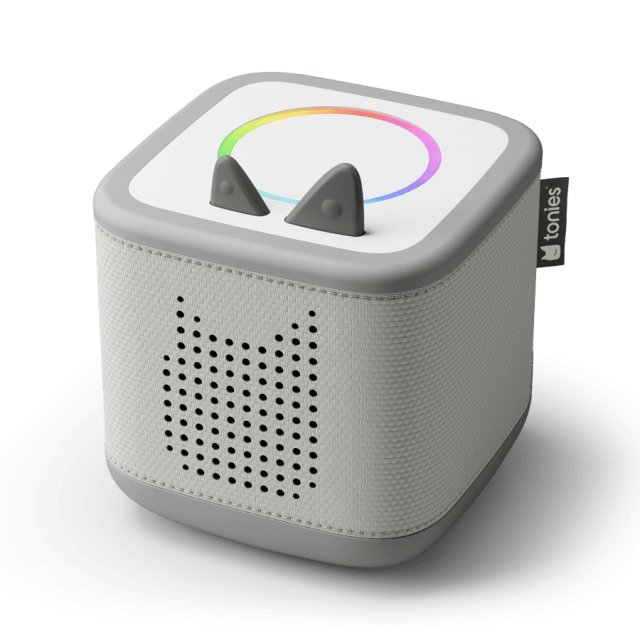
当前 Toniebox 2 Moon Grey；M05畅销提及为系列级，不能拆成该型号销量。U418身份与购买场景。 Toniebox 是用实体 Tonie 角色选择音频的播放器系列，购买者多是家长和送礼亲友；儿童在睡前、独处或旅途中自主听故事和歌曲。本卡图为2代，官方2代适龄1岁+，比较表将旧代列为3岁+；不能统一改写成全系列1岁可用，各内容小人也要看其年龄标识。
玩法循环与 AI。 孩子选一只角色放上盒子，听对应故事，捏耳朵调音量、通过机身控制切换；听完换角色或重复喜欢的段落。2代还可配另购的 Tonieplay 进行音频游戏、测验和挑战。基础循环是实体内容选择、预录音频和规则交互，不是生成式聊天；Sleep Timer、Sunrise Alarm 等便利功能也不能被统计成AI能力。U418
硬件与本体／云分工。 本体有扬声器、角色识别与可操作耳朵，2代增加反应灯环、睡眠灯并使用USB-C充电。家长App负责设置和相关内容管理；首次设置、首次播放一只Tonie或一个Tonieplay游戏需Wi-Fi获取内容，下载完成后可离线听／玩。不能把“可离线”写成从不联网。此次没有发现基础播放强制月费；新角色、游戏及部分音频另购，停订付费内容的边界未全面核实。
价与2026变化。 2026-10-10欧盟英文官网2代 Box Only EUR119.99；含税状态与最终收货国未结账锁定，页脚称满EUR50免运、配送8个EU国家，不能外推中国免运或全部地区可买。当前比较表在该区域将旧Toniebox标为No longer available，不能据此宣布全球所有旧代停售。2026年1月公布的2025英国市场材料把Toniebox列为畅销产品，未给独立销售额或代际份额；2代当前图片不能代表那一年度所有购买。M05
差异、弱点与商业启发。 相比语音机器人，实体选片让幼儿无需说准指令，家长知道内容边界；角色复购和授权内容把一次硬件购买延长。弱点是内容总成本、遗失小人、跨区目录以及首次云下载依赖。推断： 真正可借鉴的是可触摸的选择权与可离线复听，不是给所有内容加生成。关键验证问题： 扣除礼物囤积后，一户一年实际反复使用多少角色，新增内容支出是否仍让家长认可？
平台补核（2026-10-10）：W107锁定2代Sky Blue＋Bluey套装（非本卡全部系列／套装），4.82／顶端43、可门店自取；平台Street Date 2026-07-19和W121选品不是整代首发或销量，数据不回填代表图所示款价格。
G5｜开源社区与可开发机器人平台（X11）
本组独立于原37个消费核心基线和3个邻接，只增加1个开源平台研究对象；官方成品与社区复刻为同一项目的不同路径，不各算新卡，不并入标准消费整机的销量分母。
X11｜Microduck：运动角色＋可重训动作，把玩具延伸成创作平台
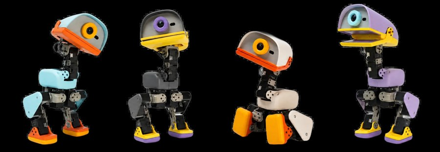
官方README主视觉，900×312研究预览；四种配色不计四款，不代表社区XL330／HD-1910套件或本机实物。D102 来源与权利身份／使用者与购买者／场景。 Pollen Robotics的小型双足机器人，有官方预售成品，也有教程、复刻设计和部件补充生态。成人机器人／开源爱好者、创作者、编程学习与共玩为研究场景推断，不是已调查用户占比或儿童适龄认证；家庭监护、安全与装配难度需另验。不是Microban或Reachy Mini，不能借后两者销量或模型配置。D101 D104
玩法循环。 手柄给速度或动作指令→鸭子行走、坐站、踢球、俯身用喙拾取或起身→换场景、拍摄角色动作、再尝试；另购轮子可扩展轮滑。开发者再进入“仿真训练→导出ONNX→部署→分享策略”的循环，玩法来自运动、身体姿态与角色表达，而不只是屏幕说话。官方列7个随附动作策略；任务库不等于每台DIY已跑通，更不证明自主视觉追球。D101 D103
硬件与版本。 官方2026成品标25cm、约0.8kg（产品页800g／店页780g）、15电机、RK3566＋AI accelerator、相机、8×8 ToF LiDAR、双IMU、麦克风／扬声器及NFC。A教程为Pi Zero 2 W／OpenRB／XL330；C本项目为HD-1910-C001×15的社区路线。它们的舵机、电源、协议、机械和模型不能互换；旧本地成本表也不是官方现售价。本文未由旧XL330资料给当前官方成品补定舵机SKU。D101 D104
AI、本体／云与费用依赖。 robotd在本体运行50Hz神经动作策略；microduck_rl用MuJoCo Warp／PPO训练并导出ONNX，训练需本地CUDA GPU或可选Hugging Face Jobs。源码／训练栈Apache-2.0，有API、更新及媒体服务，但RL行走≠生成式对话，可扩展≠现款已接LLM。所读页面未见基础动作强制订阅；云训练算力、配件和后续服务成本另计，未测全功能离线或服务终止后边界。D102 D103
价格、商业阶段与2026观察。 2026-10-10官方商店美国参数页 USD399，未含税运；机器人／电池／USB-C线／手柄套装，充电器包、开发包、附件包另售。产品页称8月27日开放预售；商店称“社区订了很多鸭子”、正在爬产，新订单公告已改为估计4—6个月且不保证圣诞交付，不能照正文首批圣诞前目标承诺新订单。首发列美加、EU／英／挪／瑞、日本、韩国，中国未列；未结账／购买／核实签收。默认地区页显示EUR340，不换算替代USD报价。订单多与排产压力是企业直接自述的需求线索，不是仅有DIY围观；尚无订单量、取消率或实际出货数据。D101
社区信号与为什么重要。 主会话10月10日官方API快照：主仓 9,276 stars／1,199 forks，训练仓2,396／543，A教程1,211／300，B复刻1,131／204，C套件14／5；分别观察，不相加为用户。再结合已有教程、可改机械、IMU固件／板件与舵机补丁，足以补足原报告漏掉的开源社区现象，而非只保留用户“爆款”评价。star不是销量、fork不是成功复刻，未得全球销量／留存／真实社媒播放数据。D104 D105
差异、弱点与商业启发。 相对从零研发，公开动作训练、教程与部件让复刻和创作有更低的起点；学习／算力、板卡版本、动力学匹配、完整源码缺口和售后支持仍是门槛。**研究推断：**动作／角色内容、教程与装配服务、兼容套件／备件供应值得测；LLM语音或视觉二次开发仅是候选方向，不预设销量。**关键验证问题：**分官方订单与DIY路线，多少人真正完成部署、一个月后还在改／玩，能否覆盖内容、支持、返修和云算力成本？完整补片